| ComCat M7.1 (ci38457511), 28 Days After, ShakeMap Surfaces | |
|---|---|
| Num Simulations | 100000 |
| Start Time | 2019/08/03 03:19:54 UTC |
| Start Time Epoch Milliseconds | 1564802394040 |
| Duration | 10 Years |
| Includes Spontaneous? | false |
| Trigger Ruptures | 1789 Trigger Ruptures |
| First: M3.98 at 2019/07/04 17:02:55 UTC | |
| Last: M2.67 at 2019/08/03 01:01:23 UTC | |
| Largest: M7.1 at 2019/07/06 03:19:53 UTC | |
| Trigger Ruptures | (none) |
| Config Generated With | u3etas_comcat_event_config_builder.sh --event-id ci38457511 --num-simulations 100000 --days-before 7 --days-after 28 --finite-surf-shakemap --finite-surf-shakemap-min-mag 5 --hpc-site USC_HPC --nodes 36 --hours 24 --queue scec_hiprio |
| Magnitude | 1 Hour Prob | 1 Day Prob | 1 Week Prob | 1 Month Prob | 1 Year Prob | 10 Year Prob |
|---|---|---|---|---|---|---|
| M≥4 | 0.012 (1.17%) | 0.245 (24.50%) | 0.833 (83.34%) | 0.997 (99.68%) | 1.000 (100.00%) | 1.000 (100.00%) |
| 95% Conf | [1.10% 1.24%] | [24.23% 24.77%] | [83.11% 83.58%] | [99.65% 99.72%] | [100.00% 100.00%] | [100.00% 100.00%] |
| M≥4.5 | 3.72E-3 (0.37%) | 0.086 (8.57%) | 0.443 (44.27%) | 0.853 (85.30%) | 0.999 (99.89%) | 1.000 (100.00%) |
| 95% Conf | [0.34% 0.41%] | [8.40% 8.75%] | [43.96% 44.58%] | [85.08% 85.52%] | [99.87% 99.91%] | [100.00% 100.00%] |
| M≥5 | 1.10E-3 (0.11%) | 0.028 (2.82%) | 0.173 (17.27%) | 0.465 (46.48%) | 0.894 (89.44%) | 0.983 (98.29%) |
| 95% Conf | [0.09% 0.13%] | [2.72% 2.92%] | [17.03% 17.50%] | [46.17% 46.79%] | [89.25% 89.63%] | [98.21% 98.37%] |
| M≥5.5 | 3.60E-4 (0.04%) | 8.65E-3 (0.86%) | 0.057 (5.72%) | 0.178 (17.79%) | 0.513 (51.34%) | 0.735 (73.49%) |
| 95% Conf | [0.03% 0.05%] | [0.81% 0.92%] | [5.58% 5.87%] | [17.56% 18.03%] | [51.03% 51.65%] | [73.22% 73.77%] |
| M≥6 | 4.00E-5 (0.00%) | 2.30E-3 (0.23%) | 0.017 (1.66%) | 0.054 (5.42%) | 0.186 (18.59%) | 0.323 (32.32%) |
| 95% Conf | [0.00% 0.01%] | [0.20% 0.26%] | [1.58% 1.74%] | [5.28% 5.56%] | [18.35% 18.83%] | [32.03% 32.61%] |
| M≥6.5 | 2.00E-5 (0.00%) | 5.30E-4 (0.05%) | 3.45E-3 (0.34%) | 0.012 (1.20%) | 0.046 (4.64%) | 0.086 (8.62%) |
| 95% Conf | [0.00% 0.01%] | [0.04% 0.07%] | [0.31% 0.38%] | [1.13% 1.27%] | [4.51% 4.77%] | [8.45% 8.80%] |
| M≥7 | 0.000 (0.00%) | 2.00E-4 (0.02%) | 1.02E-3 (0.10%) | 3.90E-3 (0.39%) | 0.016 (1.62%) | 0.031 (3.09%) |
| 95% Conf | [0.00% 0.00%] | [0.01% 0.03%] | [0.08% 0.12%] | [0.35% 0.43%] | [1.54% 1.70%] | [2.99% 3.20%] |
| M≥7.1 | 0.000 (0.00%) | 1.80E-4 (0.02%) | 8.60E-4 (0.09%) | 3.33E-3 (0.33%) | 0.014 (1.38%) | 0.027 (2.67%) |
| 95% Conf | [0.00% 0.00%] | [0.01% 0.03%] | [0.07% 0.11%] | [0.30% 0.37%] | [1.31% 1.46%] | [2.57% 2.77%] |
| M≥7.5 | 0.000 (0.00%) | 7.00E-5 (0.01%) | 3.00E-4 (0.03%) | 1.18E-3 (0.12%) | 5.08E-3 (0.51%) | 0.010 (1.00%) |
| 95% Conf | [0.00% 0.00%] | [0.00% 0.02%] | [0.02% 0.04%] | [0.10% 0.14%] | [0.47% 0.55%] | [0.94% 1.07%] |
| M≥8 | 0.000 (0.00%) | 0.000 (0.00%) | 0.000 (0.00%) | 2.00E-5 (0.00%) | 1.20E-4 (0.01%) | 2.40E-4 (0.02%) |
| 95% Conf | [0.00% 0.00%] | [0.00% 0.00%] | [0.00% 0.00%] | [0.00% 0.01%] | [0.01% 0.02%] | [0.02% 0.04%] |
Legend
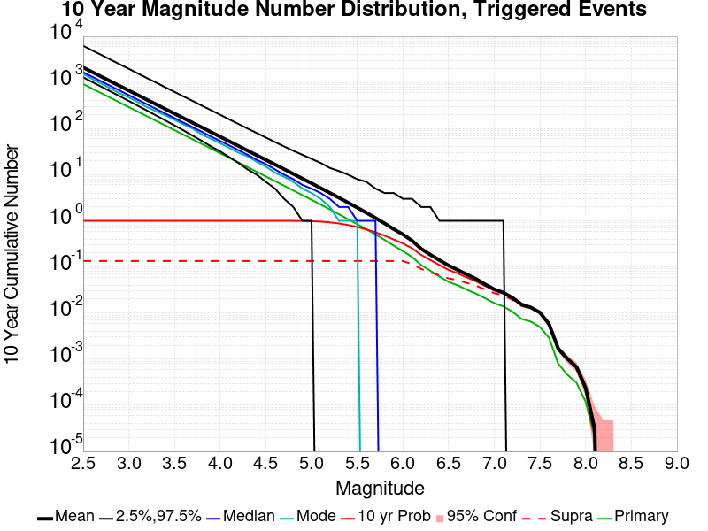
| Mag | Mean | 2.5 %ile | 97.5 %ile | Median | Mode | 10 yr Probability | 10 yr Prob 95% Conf | 10 yr Supra-Seis Prob | Primary Aftershocks Mean |
|---|---|---|---|---|---|---|---|---|---|
| M≥2.5 | 2113.707 | 1294.000 | 6243.000 | 1670.000 | 1539.000 | 1.000 (100.00%) | [100.00% 100.00%] | 0.134 (13.44%) | 925.739 |
| M≥2.6 | 1678.871 | 1024.000 | 4948.000 | 1327.000 | 1185.000 | 1.000 (100.00%) | [100.00% 100.00%] | 0.134 (13.44%) | 735.315 |
| M≥2.7 | 1333.650 | 809.000 | 3942.000 | 1055.000 | 942.000 | 1.000 (100.00%) | [100.00% 100.00%] | 0.134 (13.44%) | 584.107 |
| M≥2.8 | 1059.259 | 639.000 | 3124.000 | 838.000 | 742.000 | 1.000 (100.00%) | [100.00% 100.00%] | 0.134 (13.44%) | 463.946 |
| M≥2.9 | 841.364 | 504.000 | 2481.000 | 666.000 | 579.000 | 1.000 (100.00%) | [100.00% 100.00%] | 0.134 (13.44%) | 368.481 |
| M≥3 | 668.246 | 397.000 | 1975.000 | 530.000 | 475.000 | 1.000 (100.00%) | [100.00% 100.00%] | 0.134 (13.44%) | 292.660 |
| M≥3.1 | 530.755 | 312.000 | 1565.000 | 421.000 | 373.000 | 1.000 (100.00%) | [100.00% 100.00%] | 0.134 (13.44%) | 232.442 |
| M≥3.2 | 421.515 | 245.000 | 1242.000 | 335.000 | 291.000 | 1.000 (100.00%) | [100.00% 100.00%] | 0.134 (13.44%) | 184.621 |
| M≥3.3 | 334.784 | 192.000 | 991.000 | 266.000 | 236.000 | 1.000 (100.00%) | [100.00% 100.00%] | 0.134 (13.44%) | 146.630 |
| M≥3.4 | 265.914 | 150.000 | 786.000 | 212.000 | 195.000 | 1.000 (100.00%) | [100.00% 100.00%] | 0.134 (13.44%) | 116.490 |
| M≥3.5 | 211.160 | 117.000 | 624.000 | 169.000 | 155.000 | 1.000 (100.00%) | [100.00% 100.00%] | 0.134 (13.44%) | 92.512 |
| M≥3.6 | 167.693 | 91.000 | 496.000 | 134.000 | 123.000 | 1.000 (100.00%) | [100.00% 100.00%] | 0.134 (13.44%) | 73.468 |
| M≥3.7 | 133.187 | 70.000 | 396.000 | 107.000 | 100.000 | 1.000 (100.00%) | [100.00% 100.00%] | 0.134 (13.44%) | 58.352 |
| M≥3.8 | 105.756 | 54.000 | 314.000 | 85.000 | 74.000 | 1.000 (100.00%) | [100.00% 100.00%] | 0.134 (13.44%) | 46.333 |
| M≥3.9 | 83.976 | 41.000 | 250.000 | 67.000 | 60.000 | 1.000 (100.00%) | [100.00% 100.00%] | 0.134 (13.44%) | 36.790 |
| M≥4 | 66.671 | 32.000 | 199.000 | 54.000 | 48.000 | 1.000 (100.00%) | [100.00% 100.00%] | 0.134 (13.44%) | 29.212 |
| M≥4.1 | 52.911 | 24.000 | 158.000 | 43.000 | 38.000 | 1.000 (100.00%) | [100.00% 100.00%] | 0.134 (13.44%) | 23.187 |
| M≥4.2 | 41.984 | 18.000 | 126.000 | 34.000 | 30.000 | 1.000 (100.00%) | [100.00% 100.00%] | 0.134 (13.44%) | 18.389 |
| M≥4.3 | 33.311 | 13.000 | 100.000 | 27.000 | 25.000 | 1.000 (100.00%) | [100.00% 100.00%] | 0.134 (13.44%) | 14.594 |
| M≥4.4 | 26.412 | 10.000 | 80.000 | 21.000 | 19.000 | 1.000 (100.00%) | [100.00% 100.00%] | 0.134 (13.44%) | 11.566 |
| M≥4.5 | 20.942 | 7.000 | 64.000 | 17.000 | 15.000 | 1.000 (100.00%) | [100.00% 100.00%] | 0.134 (13.44%) | 9.172 |
| M≥4.6 | 16.604 | 5.000 | 51.000 | 13.000 | 11.000 | 1.000 (99.99%) | [99.99% 100.00%] | 0.134 (13.44%) | 7.279 |
| M≥4.7 | 13.148 | 3.000 | 41.000 | 10.000 | 9.000 | 1.000 (99.96%) | [99.94% 99.97%] | 0.134 (13.44%) | 5.764 |
| M≥4.8 | 10.412 | 2.000 | 33.000 | 8.000 | 7.000 | 0.998 (99.81%) | [99.78% 99.84%] | 0.134 (13.44%) | 4.564 |
| M≥4.9 | 8.230 | 1.000 | 27.000 | 6.000 | 5.000 | 0.993 (99.34%) | [99.29% 99.39%] | 0.134 (13.44%) | 3.608 |
| M≥5 | 6.505 | 1.000 | 22.000 | 5.000 | 4.000 | 0.983 (98.29%) | [98.21% 98.37%] | 0.134 (13.44%) | 2.856 |
| M≥5.1 | 5.129 | 0.000 | 18.000 | 4.000 | 3.000 | 0.963 (96.27%) | [96.15% 96.38%] | 0.134 (13.44%) | 2.250 |
| M≥5.2 | 4.035 | 0.000 | 14.000 | 3.000 | 2.000 | 0.927 (92.67%) | [92.50% 92.83%] | 0.134 (13.44%) | 1.771 |
| M≥5.3 | 3.168 | 0.000 | 12.000 | 2.000 | 1.000 | 0.876 (87.62%) | [87.41% 87.82%] | 0.134 (13.44%) | 1.390 |
| M≥5.4 | 2.476 | 0.000 | 10.000 | 2.000 | 1.000 | 0.811 (81.11%) | [80.87% 81.36%] | 0.134 (13.44%) | 1.085 |
| M≥5.5 | 1.932 | 0.000 | 8.000 | 1.000 | 1.000 | 0.735 (73.49%) | [73.22% 73.77%] | 0.134 (13.44%) | 0.847 |
| M≥5.6 | 1.495 | 0.000 | 7.000 | 1.000 | 0.000 | 0.650 (64.98%) | [64.69% 65.28%] | 0.134 (13.44%) | 0.655 |
| M≥5.7 | 1.153 | 0.000 | 5.000 | 1.000 | 0.000 | 0.564 (56.36%) | [56.05% 56.66%] | 0.134 (13.44%) | 0.506 |
| M≥5.8 | 0.877 | 0.000 | 4.000 | 0.000 | 0.000 | 0.476 (47.59%) | [47.28% 47.90%] | 0.134 (13.44%) | 0.385 |
| M≥5.9 | 0.659 | 0.000 | 4.000 | 0.000 | 0.000 | 0.392 (39.24%) | [38.94% 39.55%] | 0.134 (13.44%) | 0.289 |
| M≥6 | 0.508 | 0.000 | 3.000 | 0.000 | 0.000 | 0.323 (32.32%) | [32.03% 32.61%] | 0.134 (13.44%) | 0.221 |
| M≥6.1 | 0.372 | 0.000 | 3.000 | 0.000 | 0.000 | 0.254 (25.38%) | [25.11% 25.65%] | 0.115 (11.52%) | 0.165 |
| M≥6.2 | 0.247 | 0.000 | 2.000 | 0.000 | 0.000 | 0.182 (18.22%) | [17.98% 18.46%] | 0.091 (9.06%) | 0.111 |
| M≥6.3 | 0.184 | 0.000 | 2.000 | 0.000 | 0.000 | 0.142 (14.16%) | [13.94% 14.38%] | 0.076 (7.60%) | 0.083 |
| M≥6.4 | 0.140 | 0.000 | 1.000 | 0.000 | 0.000 | 0.110 (10.98%) | [10.79% 11.18%] | 0.066 (6.59%) | 0.062 |
| M≥6.5 | 0.108 | 0.000 | 1.000 | 0.000 | 0.000 | 0.086 (8.62%) | [8.45% 8.80%] | 0.057 (5.65%) | 0.048 |
| M≥6.6 | 0.086 | 0.000 | 1.000 | 0.000 | 0.000 | 0.073 (7.26%) | [7.10% 7.43%] | 0.052 (5.19%) | 0.040 |
| M≥6.7 | 0.069 | 0.000 | 1.000 | 0.000 | 0.000 | 0.059 (5.91%) | [5.77% 6.06%] | 0.045 (4.49%) | 0.032 |
| M≥6.8 | 0.055 | 0.000 | 1.000 | 0.000 | 0.000 | 0.049 (4.88%) | [4.75% 5.02%] | 0.039 (3.92%) | 0.026 |
| M≥6.9 | 0.042 | 0.000 | 1.000 | 0.000 | 0.000 | 0.039 (3.88%) | [3.76% 4.00%] | 0.033 (3.25%) | 0.021 |
| M≥7 | 0.033 | 0.000 | 1.000 | 0.000 | 0.000 | 0.031 (3.09%) | [2.99% 3.20%] | 0.027 (2.70%) | 0.016 |
| M≥7.1 | 0.028 | 0.000 | 1.000 | 0.000 | 0.000 | 0.027 (2.67%) | [2.57% 2.77%] | 0.024 (2.44%) | 0.014 |
| M≥7.2 | 0.021 | 0.000 | 0.000 | 0.000 | 0.000 | 0.021 (2.06%) | [1.97% 2.15%] | 0.019 (1.93%) | 0.011 |
| M≥7.3 | 0.015 | 0.000 | 0.000 | 0.000 | 0.000 | 0.015 (1.48%) | [1.41% 1.56%] | 0.014 (1.42%) | 7.42E-3 |
| M≥7.4 | 0.013 | 0.000 | 0.000 | 0.000 | 0.000 | 0.013 (1.29%) | [1.22% 1.36%] | 0.013 (1.26%) | 6.54E-3 |
| M≥7.5 | 0.010 | 0.000 | 0.000 | 0.000 | 0.000 | 0.010 (1.00%) | [0.94% 1.07%] | 9.90E-3 (0.99%) | 4.96E-3 |
| M≥7.6 | 5.73E-3 | 0.000 | 0.000 | 0.000 | 0.000 | 5.61E-3 (0.56%) | [0.52% 0.61%] | 5.58E-3 (0.56%) | 2.90E-3 |
| M≥7.7 | 1.70E-3 | 0.000 | 0.000 | 0.000 | 0.000 | 1.67E-3 (0.17%) | [0.14% 0.19%] | 1.66E-3 (0.17%) | 8.00E-4 |
| M≥7.8 | 1.02E-3 | 0.000 | 0.000 | 0.000 | 0.000 | 1.01E-3 (0.10%) | [0.08% 0.12%] | 1.01E-3 (0.10%) | 4.60E-4 |
| M≥7.9 | 6.80E-4 | 0.000 | 0.000 | 0.000 | 0.000 | 6.80E-4 (0.07%) | [0.05% 0.09%] | 6.80E-4 (0.07%) | 3.10E-4 |
| M≥8 | 2.40E-4 | 0.000 | 0.000 | 0.000 | 0.000 | 2.40E-4 (0.02%) | [0.02% 0.04%] | 2.40E-4 (0.02%) | 1.20E-4 |
| M≥8.1 | 3.00E-5 | 0.000 | 0.000 | 0.000 | 0.000 | 3.00E-5 (0.00%) | [0.00% 0.01%] | 3.00E-5 (0.00%) | 2.00E-5 |
| M≥8.2 | 0.000 | 0.000 | 0.000 | 0.000 | 0.000 | 0.000 (0.00%) | [0.00% 0.00%] | 0.000 (0.00%) | 0.000 |
| M≥8.3 | 0.000 | 0.000 | 0.000 | 0.000 | 0.000 | 0.000 (0.00%) | [0.00% 0.00%] | 0.000 (0.00%) | 0.000 |
| M≥8.4 | 0.000 | 0.000 | 0.000 | 0.000 | 0.000 | 0.000 (0.00%) | [0.00% 0.00%] | 0.000 (0.00%) | 0.000 |
| M≥8.5 | 0.000 | 0.000 | 0.000 | 0.000 | 0.000 | 0.000 (0.00%) | [0.00% 0.00%] | 0.000 (0.00%) | 0.000 |
| M≥8.6 | 0.000 | 0.000 | 0.000 | 0.000 | 0.000 | 0.000 (0.00%) | [0.00% 0.00%] | 0.000 (0.00%) | 0.000 |
| M≥8.7 | 0.000 | 0.000 | 0.000 | 0.000 | 0.000 | 0.000 (0.00%) | [0.00% 0.00%] | 0.000 (0.00%) | 0.000 |
| M≥8.8 | 0.000 | 0.000 | 0.000 | 0.000 | 0.000 | 0.000 (0.00%) | [0.00% 0.00%] | 0.000 (0.00%) | 0.000 |
| M≥8.9 | 0.000 | 0.000 | 0.000 | 0.000 | 0.000 | 0.000 (0.00%) | [0.00% 0.00%] | 0.000 (0.00%) | 0.000 |
| M≥9 | 0.000 | 0.000 | 0.000 | 0.000 | 0.000 | 0.000 (0.00%) | [0.00% 0.00%] | 0.000 (0.00%) | 0.000 |
Legend
| Mag | Mean | 2.5 %ile | 97.5 %ile | Median | Mode | 1 yr Probability | 1 yr Prob 95% Conf | 1 yr Supra-Seis Prob | Primary Aftershocks Mean |
|---|---|---|---|---|---|---|---|---|---|
| M≥2.5 | 1060.360 | 683.000 | 2619.000 | 857.000 | 804.000 | 1.000 (100.00%) | [100.00% 100.00%] | 0.071 (7.11%) | 542.200 |
| M≥2.6 | 842.229 | 539.000 | 2079.000 | 681.000 | 637.000 | 1.000 (100.00%) | [100.00% 100.00%] | 0.071 (7.11%) | 430.662 |
| M≥2.7 | 669.034 | 425.000 | 1655.000 | 542.000 | 501.000 | 1.000 (100.00%) | [100.00% 100.00%] | 0.071 (7.11%) | 342.095 |
| M≥2.8 | 531.417 | 334.000 | 1315.000 | 431.000 | 388.000 | 1.000 (100.00%) | [100.00% 100.00%] | 0.071 (7.11%) | 271.747 |
| M≥2.9 | 422.082 | 262.000 | 1046.000 | 343.000 | 310.000 | 1.000 (100.00%) | [100.00% 100.00%] | 0.071 (7.11%) | 215.811 |
| M≥3 | 335.233 | 206.000 | 831.000 | 273.000 | 247.000 | 1.000 (100.00%) | [100.00% 100.00%] | 0.071 (7.11%) | 171.417 |
| M≥3.1 | 266.282 | 161.000 | 660.000 | 217.000 | 194.000 | 1.000 (100.00%) | [100.00% 100.00%] | 0.071 (7.11%) | 136.150 |
| M≥3.2 | 211.458 | 125.000 | 527.000 | 172.000 | 159.000 | 1.000 (100.00%) | [100.00% 100.00%] | 0.071 (7.11%) | 108.130 |
| M≥3.3 | 167.919 | 97.000 | 417.000 | 137.000 | 127.000 | 1.000 (100.00%) | [100.00% 100.00%] | 0.071 (7.11%) | 85.856 |
| M≥3.4 | 133.382 | 75.000 | 332.000 | 109.000 | 101.000 | 1.000 (100.00%) | [100.00% 100.00%] | 0.071 (7.11%) | 68.216 |
| M≥3.5 | 105.940 | 58.000 | 265.000 | 87.000 | 81.000 | 1.000 (100.00%) | [100.00% 100.00%] | 0.071 (7.11%) | 54.181 |
| M≥3.6 | 84.144 | 45.000 | 210.000 | 69.000 | 65.000 | 1.000 (100.00%) | [100.00% 100.00%] | 0.071 (7.11%) | 43.035 |
| M≥3.7 | 66.830 | 34.000 | 168.000 | 55.000 | 50.000 | 1.000 (100.00%) | [100.00% 100.00%] | 0.071 (7.11%) | 34.179 |
| M≥3.8 | 53.060 | 26.000 | 134.000 | 44.000 | 41.000 | 1.000 (100.00%) | [100.00% 100.00%] | 0.071 (7.11%) | 27.144 |
| M≥3.9 | 42.131 | 19.000 | 107.000 | 35.000 | 32.000 | 1.000 (100.00%) | [100.00% 100.00%] | 0.071 (7.11%) | 21.548 |
| M≥4 | 33.436 | 14.000 | 85.000 | 28.000 | 24.000 | 1.000 (100.00%) | [100.00% 100.00%] | 0.071 (7.11%) | 17.101 |
| M≥4.1 | 26.539 | 11.000 | 68.000 | 22.000 | 20.000 | 1.000 (100.00%) | [100.00% 100.00%] | 0.071 (7.11%) | 13.573 |
| M≥4.2 | 21.052 | 8.000 | 55.000 | 17.000 | 16.000 | 1.000 (100.00%) | [100.00% 100.00%] | 0.071 (7.11%) | 10.762 |
| M≥4.3 | 16.697 | 5.000 | 44.000 | 14.000 | 12.000 | 1.000 (100.00%) | [99.99% 100.00%] | 0.071 (7.11%) | 8.540 |
| M≥4.4 | 13.237 | 4.000 | 36.000 | 11.000 | 9.000 | 1.000 (99.97%) | [99.96% 99.98%] | 0.071 (7.11%) | 6.767 |
| M≥4.5 | 10.495 | 2.000 | 29.000 | 9.000 | 8.000 | 0.999 (99.89%) | [99.87% 99.91%] | 0.071 (7.11%) | 5.367 |
| M≥4.6 | 8.320 | 2.000 | 24.000 | 7.000 | 6.000 | 0.996 (99.56%) | [99.52% 99.60%] | 0.071 (7.11%) | 4.257 |
| M≥4.7 | 6.587 | 1.000 | 19.000 | 5.000 | 4.000 | 0.988 (98.76%) | [98.68% 98.82%] | 0.071 (7.11%) | 3.369 |
| M≥4.8 | 5.212 | 0.000 | 16.000 | 4.000 | 3.000 | 0.970 (97.02%) | [96.91% 97.12%] | 0.071 (7.11%) | 2.666 |
| M≥4.9 | 4.122 | 0.000 | 13.000 | 3.000 | 2.000 | 0.939 (93.90%) | [93.75% 94.05%] | 0.071 (7.11%) | 2.108 |
| M≥5 | 3.257 | 0.000 | 11.000 | 2.000 | 2.000 | 0.894 (89.44%) | [89.25% 89.63%] | 0.071 (7.11%) | 1.667 |
| M≥5.1 | 2.568 | 0.000 | 9.000 | 2.000 | 1.000 | 0.836 (83.64%) | [83.41% 83.87%] | 0.071 (7.11%) | 1.315 |
| M≥5.2 | 2.022 | 0.000 | 8.000 | 1.000 | 1.000 | 0.764 (76.39%) | [76.12% 76.65%] | 0.071 (7.11%) | 1.034 |
| M≥5.3 | 1.586 | 0.000 | 6.000 | 1.000 | 0.000 | 0.682 (68.16%) | [67.87% 68.45%] | 0.071 (7.11%) | 0.811 |
| M≥5.4 | 1.238 | 0.000 | 5.000 | 1.000 | 0.000 | 0.596 (59.63%) | [59.33% 59.94%] | 0.071 (7.11%) | 0.633 |
| M≥5.5 | 0.967 | 0.000 | 5.000 | 1.000 | 0.000 | 0.513 (51.34%) | [51.03% 51.65%] | 0.071 (7.11%) | 0.495 |
| M≥5.6 | 0.749 | 0.000 | 4.000 | 0.000 | 0.000 | 0.433 (43.27%) | [42.96% 43.58%] | 0.071 (7.11%) | 0.382 |
| M≥5.7 | 0.577 | 0.000 | 3.000 | 0.000 | 0.000 | 0.359 (35.85%) | [35.55% 36.15%] | 0.071 (7.11%) | 0.295 |
| M≥5.8 | 0.439 | 0.000 | 3.000 | 0.000 | 0.000 | 0.291 (29.10%) | [28.82% 29.38%] | 0.071 (7.11%) | 0.224 |
| M≥5.9 | 0.330 | 0.000 | 2.000 | 0.000 | 0.000 | 0.232 (23.16%) | [22.90% 23.43%] | 0.071 (7.11%) | 0.168 |
| M≥6 | 0.253 | 0.000 | 2.000 | 0.000 | 0.000 | 0.186 (18.59%) | [18.35% 18.83%] | 0.071 (7.11%) | 0.129 |
| M≥6.1 | 0.186 | 0.000 | 2.000 | 0.000 | 0.000 | 0.143 (14.32%) | [14.10% 14.53%] | 0.061 (6.14%) | 0.097 |
| M≥6.2 | 0.125 | 0.000 | 1.000 | 0.000 | 0.000 | 0.100 (10.04%) | [9.86% 10.23%] | 0.048 (4.82%) | 0.065 |
| M≥6.3 | 0.093 | 0.000 | 1.000 | 0.000 | 0.000 | 0.077 (7.72%) | [7.56% 7.89%] | 0.040 (4.04%) | 0.049 |
| M≥6.4 | 0.071 | 0.000 | 1.000 | 0.000 | 0.000 | 0.059 (5.95%) | [5.80% 6.09%] | 0.035 (3.51%) | 0.036 |
| M≥6.5 | 0.055 | 0.000 | 1.000 | 0.000 | 0.000 | 0.046 (4.64%) | [4.51% 4.77%] | 0.030 (3.02%) | 0.028 |
| M≥6.6 | 0.044 | 0.000 | 1.000 | 0.000 | 0.000 | 0.039 (3.93%) | [3.81% 4.05%] | 0.028 (2.76%) | 0.024 |
| M≥6.7 | 0.035 | 0.000 | 1.000 | 0.000 | 0.000 | 0.032 (3.17%) | [3.06% 3.28%] | 0.024 (2.37%) | 0.019 |
| M≥6.8 | 0.028 | 0.000 | 1.000 | 0.000 | 0.000 | 0.026 (2.61%) | [2.51% 2.71%] | 0.021 (2.06%) | 0.016 |
| M≥6.9 | 0.021 | 0.000 | 0.000 | 0.000 | 0.000 | 0.020 (2.02%) | [1.93% 2.11%] | 0.017 (1.67%) | 0.012 |
| M≥7 | 0.017 | 0.000 | 0.000 | 0.000 | 0.000 | 0.016 (1.62%) | [1.54% 1.70%] | 0.014 (1.39%) | 9.48E-3 |
| M≥7.1 | 0.014 | 0.000 | 0.000 | 0.000 | 0.000 | 0.014 (1.38%) | [1.31% 1.46%] | 0.013 (1.25%) | 8.00E-3 |
| M≥7.2 | 0.011 | 0.000 | 0.000 | 0.000 | 0.000 | 0.011 (1.05%) | [0.99% 1.12%] | 9.73E-3 (0.97%) | 6.15E-3 |
| M≥7.3 | 7.62E-3 | 0.000 | 0.000 | 0.000 | 0.000 | 7.47E-3 (0.75%) | [0.70% 0.80%] | 7.04E-3 (0.70%) | 4.21E-3 |
| M≥7.4 | 6.62E-3 | 0.000 | 0.000 | 0.000 | 0.000 | 6.50E-3 (0.65%) | [0.60% 0.70%] | 6.30E-3 (0.63%) | 3.72E-3 |
| M≥7.5 | 5.17E-3 | 0.000 | 0.000 | 0.000 | 0.000 | 5.08E-3 (0.51%) | [0.47% 0.55%] | 5.00E-3 (0.50%) | 2.86E-3 |
| M≥7.6 | 2.89E-3 | 0.000 | 0.000 | 0.000 | 0.000 | 2.85E-3 (0.29%) | [0.25% 0.32%] | 2.83E-3 (0.28%) | 1.60E-3 |
| M≥7.7 | 8.50E-4 | 0.000 | 0.000 | 0.000 | 0.000 | 8.50E-4 (0.08%) | [0.07% 0.11%] | 8.40E-4 (0.08%) | 4.20E-4 |
| M≥7.8 | 5.10E-4 | 0.000 | 0.000 | 0.000 | 0.000 | 5.10E-4 (0.05%) | [0.04% 0.07%] | 5.10E-4 (0.05%) | 2.40E-4 |
| M≥7.9 | 3.50E-4 | 0.000 | 0.000 | 0.000 | 0.000 | 3.50E-4 (0.03%) | [0.02% 0.05%] | 3.50E-4 (0.03%) | 1.60E-4 |
| M≥8 | 1.20E-4 | 0.000 | 0.000 | 0.000 | 0.000 | 1.20E-4 (0.01%) | [0.01% 0.02%] | 1.20E-4 (0.01%) | 5.00E-5 |
| M≥8.1 | 1.00E-5 | 0.000 | 0.000 | 0.000 | 0.000 | 1.00E-5 (0.00%) | [0.00% 0.01%] | 1.00E-5 (0.00%) | 0.000 |
| M≥8.2 | 0.000 | 0.000 | 0.000 | 0.000 | 0.000 | 0.000 (0.00%) | [0.00% 0.00%] | 0.000 (0.00%) | 0.000 |
| M≥8.3 | 0.000 | 0.000 | 0.000 | 0.000 | 0.000 | 0.000 (0.00%) | [0.00% 0.00%] | 0.000 (0.00%) | 0.000 |
| M≥8.4 | 0.000 | 0.000 | 0.000 | 0.000 | 0.000 | 0.000 (0.00%) | [0.00% 0.00%] | 0.000 (0.00%) | 0.000 |
| M≥8.5 | 0.000 | 0.000 | 0.000 | 0.000 | 0.000 | 0.000 (0.00%) | [0.00% 0.00%] | 0.000 (0.00%) | 0.000 |
| M≥8.6 | 0.000 | 0.000 | 0.000 | 0.000 | 0.000 | 0.000 (0.00%) | [0.00% 0.00%] | 0.000 (0.00%) | 0.000 |
| M≥8.7 | 0.000 | 0.000 | 0.000 | 0.000 | 0.000 | 0.000 (0.00%) | [0.00% 0.00%] | 0.000 (0.00%) | 0.000 |
| M≥8.8 | 0.000 | 0.000 | 0.000 | 0.000 | 0.000 | 0.000 (0.00%) | [0.00% 0.00%] | 0.000 (0.00%) | 0.000 |
| M≥8.9 | 0.000 | 0.000 | 0.000 | 0.000 | 0.000 | 0.000 (0.00%) | [0.00% 0.00%] | 0.000 (0.00%) | 0.000 |
| M≥9 | 0.000 | 0.000 | 0.000 | 0.000 | 0.000 | 0.000 (0.00%) | [0.00% 0.00%] | 0.000 (0.00%) | 0.000 |
Legend
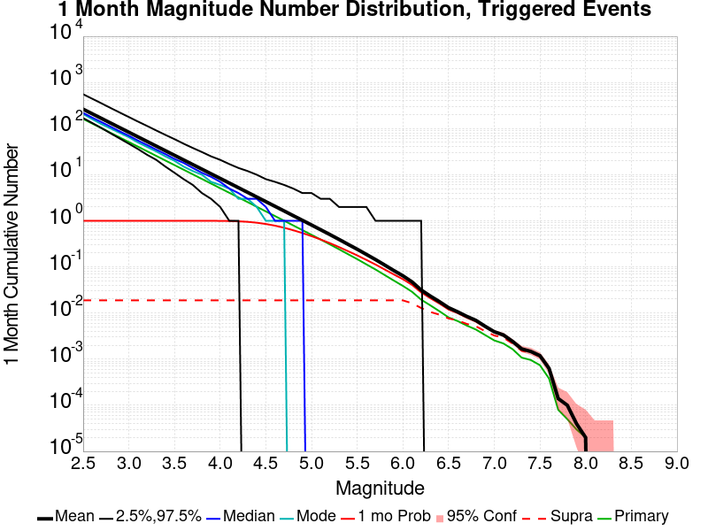
| Mag | Mean | 2.5 %ile | 97.5 %ile | Median | Mode | 1 mo Probability | 1 mo Prob 95% Conf | 1 mo Supra-Seis Prob | Primary Aftershocks Mean |
|---|---|---|---|---|---|---|---|---|---|
| M≥2.5 | 263.320 | 169.000 | 556.000 | 218.000 | 207.000 | 1.000 (100.00%) | [100.00% 100.00%] | 0.019 (1.88%) | 161.646 |
| M≥2.6 | 209.145 | 132.000 | 443.000 | 173.000 | 160.000 | 1.000 (100.00%) | [100.00% 100.00%] | 0.019 (1.88%) | 128.384 |
| M≥2.7 | 166.137 | 103.000 | 353.000 | 138.000 | 125.000 | 1.000 (100.00%) | [100.00% 100.00%] | 0.019 (1.88%) | 101.986 |
| M≥2.8 | 131.954 | 79.000 | 280.000 | 110.000 | 101.000 | 1.000 (100.00%) | [100.00% 100.00%] | 0.019 (1.88%) | 81.015 |
| M≥2.9 | 104.814 | 61.000 | 223.000 | 87.000 | 81.000 | 1.000 (100.00%) | [100.00% 100.00%] | 0.019 (1.88%) | 64.346 |
| M≥3 | 83.259 | 47.000 | 178.000 | 70.000 | 65.000 | 1.000 (100.00%) | [100.00% 100.00%] | 0.019 (1.88%) | 51.111 |
| M≥3.1 | 66.142 | 36.000 | 142.000 | 55.000 | 50.000 | 1.000 (100.00%) | [100.00% 100.00%] | 0.019 (1.88%) | 40.602 |
| M≥3.2 | 52.520 | 27.000 | 114.000 | 44.000 | 40.000 | 1.000 (100.00%) | [100.00% 100.00%] | 0.019 (1.88%) | 32.237 |
| M≥3.3 | 41.701 | 21.000 | 91.000 | 35.000 | 32.000 | 1.000 (100.00%) | [100.00% 100.00%] | 0.019 (1.88%) | 25.595 |
| M≥3.4 | 33.117 | 15.000 | 73.000 | 28.000 | 25.000 | 1.000 (100.00%) | [100.00% 100.00%] | 0.019 (1.88%) | 20.329 |
| M≥3.5 | 26.312 | 11.000 | 59.000 | 22.000 | 20.000 | 1.000 (100.00%) | [100.00% 100.00%] | 0.019 (1.88%) | 16.151 |
| M≥3.6 | 20.893 | 8.000 | 47.000 | 18.000 | 15.000 | 1.000 (100.00%) | [100.00% 100.00%] | 0.019 (1.88%) | 12.827 |
| M≥3.7 | 16.590 | 6.000 | 38.000 | 14.000 | 12.000 | 1.000 (100.00%) | [99.99% 100.00%] | 0.019 (1.88%) | 10.185 |
| M≥3.8 | 13.171 | 4.000 | 31.000 | 11.000 | 10.000 | 1.000 (99.99%) | [99.98% 100.00%] | 0.019 (1.88%) | 8.089 |
| M≥3.9 | 10.456 | 3.000 | 25.000 | 9.000 | 7.000 | 0.999 (99.91%) | [99.89% 99.93%] | 0.019 (1.88%) | 6.423 |
| M≥4 | 8.300 | 2.000 | 21.000 | 7.000 | 6.000 | 0.997 (99.68%) | [99.65% 99.72%] | 0.019 (1.88%) | 5.099 |
| M≥4.1 | 6.589 | 1.000 | 17.000 | 5.000 | 5.000 | 0.991 (99.06%) | [98.99% 99.11%] | 0.019 (1.88%) | 4.048 |
| M≥4.2 | 5.224 | 1.000 | 14.000 | 4.000 | 3.000 | 0.976 (97.63%) | [97.53% 97.72%] | 0.019 (1.88%) | 3.207 |
| M≥4.3 | 4.144 | 0.000 | 12.000 | 3.000 | 3.000 | 0.951 (95.05%) | [94.91% 95.18%] | 0.019 (1.88%) | 2.547 |
| M≥4.4 | 3.285 | 0.000 | 10.000 | 3.000 | 2.000 | 0.910 (90.97%) | [90.79% 91.15%] | 0.019 (1.88%) | 2.018 |
| M≥4.5 | 2.604 | 0.000 | 8.000 | 2.000 | 1.000 | 0.853 (85.30%) | [85.08% 85.52%] | 0.019 (1.88%) | 1.598 |
| M≥4.6 | 2.063 | 0.000 | 7.000 | 1.000 | 1.000 | 0.785 (78.50%) | [78.24% 78.75%] | 0.019 (1.88%) | 1.268 |
| M≥4.7 | 1.635 | 0.000 | 6.000 | 1.000 | 1.000 | 0.707 (70.73%) | [70.45% 71.01%] | 0.019 (1.88%) | 1.004 |
| M≥4.8 | 1.293 | 0.000 | 5.000 | 1.000 | 0.000 | 0.625 (62.46%) | [62.16% 62.76%] | 0.019 (1.88%) | 0.793 |
| M≥4.9 | 1.025 | 0.000 | 4.000 | 1.000 | 0.000 | 0.543 (54.30%) | [53.99% 54.61%] | 0.019 (1.88%) | 0.628 |
| M≥5 | 0.811 | 0.000 | 4.000 | 0.000 | 0.000 | 0.465 (46.48%) | [46.17% 46.79%] | 0.019 (1.88%) | 0.497 |
| M≥5.1 | 0.640 | 0.000 | 3.000 | 0.000 | 0.000 | 0.393 (39.34%) | [39.04% 39.64%] | 0.019 (1.88%) | 0.392 |
| M≥5.2 | 0.505 | 0.000 | 3.000 | 0.000 | 0.000 | 0.328 (32.80%) | [32.51% 33.09%] | 0.019 (1.88%) | 0.309 |
| M≥5.3 | 0.396 | 0.000 | 2.000 | 0.000 | 0.000 | 0.270 (27.01%) | [26.73% 27.28%] | 0.019 (1.88%) | 0.242 |
| M≥5.4 | 0.309 | 0.000 | 2.000 | 0.000 | 0.000 | 0.219 (21.94%) | [21.68% 22.19%] | 0.019 (1.88%) | 0.189 |
| M≥5.5 | 0.242 | 0.000 | 2.000 | 0.000 | 0.000 | 0.178 (17.79%) | [17.56% 18.03%] | 0.019 (1.88%) | 0.148 |
| M≥5.6 | 0.187 | 0.000 | 2.000 | 0.000 | 0.000 | 0.142 (14.20%) | [13.98% 14.42%] | 0.019 (1.88%) | 0.114 |
| M≥5.7 | 0.144 | 0.000 | 1.000 | 0.000 | 0.000 | 0.113 (11.29%) | [11.10% 11.49%] | 0.019 (1.88%) | 0.088 |
| M≥5.8 | 0.110 | 0.000 | 1.000 | 0.000 | 0.000 | 0.088 (8.81%) | [8.63% 8.99%] | 0.019 (1.88%) | 0.067 |
| M≥5.9 | 0.084 | 0.000 | 1.000 | 0.000 | 0.000 | 0.069 (6.89%) | [6.74% 7.05%] | 0.019 (1.88%) | 0.051 |
| M≥6 | 0.064 | 0.000 | 1.000 | 0.000 | 0.000 | 0.054 (5.42%) | [5.28% 5.56%] | 0.019 (1.88%) | 0.039 |
| M≥6.1 | 0.047 | 0.000 | 1.000 | 0.000 | 0.000 | 0.041 (4.09%) | [3.96% 4.21%] | 0.016 (1.63%) | 0.029 |
| M≥6.2 | 0.032 | 0.000 | 1.000 | 0.000 | 0.000 | 0.028 (2.81%) | [2.70% 2.91%] | 0.013 (1.29%) | 0.019 |
| M≥6.3 | 0.023 | 0.000 | 0.000 | 0.000 | 0.000 | 0.021 (2.11%) | [2.02% 2.20%] | 0.011 (1.06%) | 0.015 |
| M≥6.4 | 0.018 | 0.000 | 0.000 | 0.000 | 0.000 | 0.016 (1.61%) | [1.53% 1.69%] | 9.22E-3 (0.92%) | 0.011 |
| M≥6.5 | 0.013 | 0.000 | 0.000 | 0.000 | 0.000 | 0.012 (1.20%) | [1.13% 1.27%] | 7.64E-3 (0.76%) | 8.05E-3 |
| M≥6.6 | 0.011 | 0.000 | 0.000 | 0.000 | 0.000 | 0.010 (1.00%) | [0.94% 1.07%] | 6.92E-3 (0.69%) | 6.69E-3 |
| M≥6.7 | 8.45E-3 | 0.000 | 0.000 | 0.000 | 0.000 | 7.95E-3 (0.80%) | [0.74% 0.85%] | 5.81E-3 (0.58%) | 5.35E-3 |
| M≥6.8 | 6.92E-3 | 0.000 | 0.000 | 0.000 | 0.000 | 6.57E-3 (0.66%) | [0.61% 0.71%] | 5.16E-3 (0.52%) | 4.38E-3 |
| M≥6.9 | 5.16E-3 | 0.000 | 0.000 | 0.000 | 0.000 | 5.05E-3 (0.51%) | [0.46% 0.55%] | 4.04E-3 (0.40%) | 3.34E-3 |
| M≥7 | 3.93E-3 | 0.000 | 0.000 | 0.000 | 0.000 | 3.90E-3 (0.39%) | [0.35% 0.43%] | 3.26E-3 (0.33%) | 2.55E-3 |
| M≥7.1 | 3.35E-3 | 0.000 | 0.000 | 0.000 | 0.000 | 3.33E-3 (0.33%) | [0.30% 0.37%] | 2.93E-3 (0.29%) | 2.19E-3 |
| M≥7.2 | 2.43E-3 | 0.000 | 0.000 | 0.000 | 0.000 | 2.41E-3 (0.24%) | [0.21% 0.27%] | 2.18E-3 (0.22%) | 1.65E-3 |
| M≥7.3 | 1.67E-3 | 0.000 | 0.000 | 0.000 | 0.000 | 1.66E-3 (0.17%) | [0.14% 0.19%] | 1.52E-3 (0.15%) | 1.08E-3 |
| M≥7.4 | 1.47E-3 | 0.000 | 0.000 | 0.000 | 0.000 | 1.46E-3 (0.15%) | [0.12% 0.17%] | 1.39E-3 (0.14%) | 9.60E-4 |
| M≥7.5 | 1.19E-3 | 0.000 | 0.000 | 0.000 | 0.000 | 1.18E-3 (0.12%) | [0.10% 0.14%] | 1.13E-3 (0.11%) | 7.40E-4 |
| M≥7.6 | 6.30E-4 | 0.000 | 0.000 | 0.000 | 0.000 | 6.20E-4 (0.06%) | [0.05% 0.08%] | 6.20E-4 (0.06%) | 3.80E-4 |
| M≥7.7 | 1.40E-4 | 0.000 | 0.000 | 0.000 | 0.000 | 1.40E-4 (0.01%) | [0.01% 0.02%] | 1.40E-4 (0.01%) | 8.00E-5 |
| M≥7.8 | 1.00E-4 | 0.000 | 0.000 | 0.000 | 0.000 | 1.00E-4 (0.01%) | [0.01% 0.02%] | 1.00E-4 (0.01%) | 5.00E-5 |
| M≥7.9 | 4.00E-5 | 0.000 | 0.000 | 0.000 | 0.000 | 4.00E-5 (0.00%) | [0.00% 0.01%] | 4.00E-5 (0.00%) | 3.00E-5 |
| M≥8 | 2.00E-5 | 0.000 | 0.000 | 0.000 | 0.000 | 2.00E-5 (0.00%) | [0.00% 0.01%] | 2.00E-5 (0.00%) | 2.00E-5 |
| M≥8.1 | 0.000 | 0.000 | 0.000 | 0.000 | 0.000 | 0.000 (0.00%) | [0.00% 0.00%] | 0.000 (0.00%) | 0.000 |
| M≥8.2 | 0.000 | 0.000 | 0.000 | 0.000 | 0.000 | 0.000 (0.00%) | [0.00% 0.00%] | 0.000 (0.00%) | 0.000 |
| M≥8.3 | 0.000 | 0.000 | 0.000 | 0.000 | 0.000 | 0.000 (0.00%) | [0.00% 0.00%] | 0.000 (0.00%) | 0.000 |
| M≥8.4 | 0.000 | 0.000 | 0.000 | 0.000 | 0.000 | 0.000 (0.00%) | [0.00% 0.00%] | 0.000 (0.00%) | 0.000 |
| M≥8.5 | 0.000 | 0.000 | 0.000 | 0.000 | 0.000 | 0.000 (0.00%) | [0.00% 0.00%] | 0.000 (0.00%) | 0.000 |
| M≥8.6 | 0.000 | 0.000 | 0.000 | 0.000 | 0.000 | 0.000 (0.00%) | [0.00% 0.00%] | 0.000 (0.00%) | 0.000 |
| M≥8.7 | 0.000 | 0.000 | 0.000 | 0.000 | 0.000 | 0.000 (0.00%) | [0.00% 0.00%] | 0.000 (0.00%) | 0.000 |
| M≥8.8 | 0.000 | 0.000 | 0.000 | 0.000 | 0.000 | 0.000 (0.00%) | [0.00% 0.00%] | 0.000 (0.00%) | 0.000 |
| M≥8.9 | 0.000 | 0.000 | 0.000 | 0.000 | 0.000 | 0.000 (0.00%) | [0.00% 0.00%] | 0.000 (0.00%) | 0.000 |
| M≥9 | 0.000 | 0.000 | 0.000 | 0.000 | 0.000 | 0.000 (0.00%) | [0.00% 0.00%] | 0.000 (0.00%) | 0.000 |
Legend
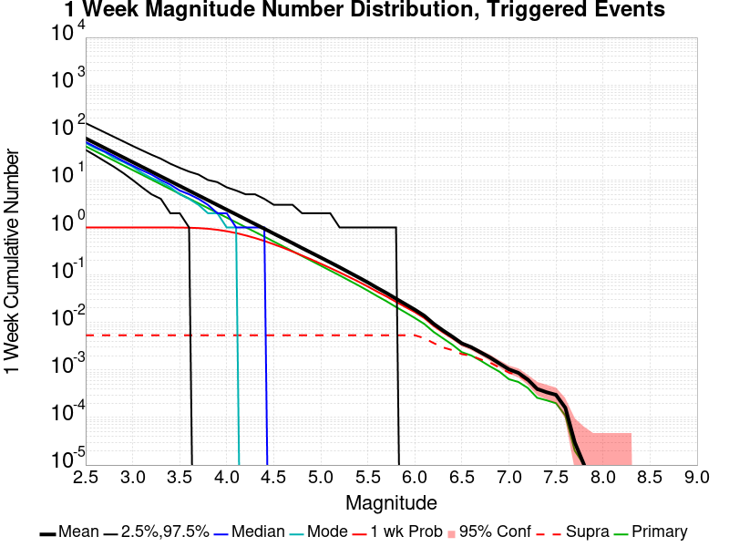
| Mag | Mean | 2.5 %ile | 97.5 %ile | Median | Mode | 1 wk Probability | 1 wk Prob 95% Conf | 1 wk Supra-Seis Prob | Primary Aftershocks Mean |
|---|---|---|---|---|---|---|---|---|---|
| M≥2.5 | 75.089 | 43.000 | 157.000 | 63.000 | 60.000 | 1.000 (100.00%) | [100.00% 100.00%] | 5.38E-3 (0.54%) | 51.158 |
| M≥2.6 | 59.654 | 33.000 | 126.000 | 50.000 | 47.000 | 1.000 (100.00%) | [100.00% 100.00%] | 5.38E-3 (0.54%) | 40.634 |
| M≥2.7 | 47.372 | 25.000 | 101.000 | 40.000 | 39.000 | 1.000 (100.00%) | [100.00% 100.00%] | 5.38E-3 (0.54%) | 32.269 |
| M≥2.8 | 37.625 | 19.000 | 81.000 | 32.000 | 29.000 | 1.000 (100.00%) | [100.00% 100.00%] | 5.38E-3 (0.54%) | 25.634 |
| M≥2.9 | 29.888 | 14.000 | 65.000 | 25.000 | 24.000 | 1.000 (100.00%) | [100.00% 100.00%] | 5.38E-3 (0.54%) | 20.360 |
| M≥3 | 23.738 | 10.000 | 52.000 | 20.000 | 19.000 | 1.000 (100.00%) | [100.00% 100.00%] | 5.38E-3 (0.54%) | 16.173 |
| M≥3.1 | 18.871 | 7.000 | 42.000 | 16.000 | 14.000 | 1.000 (100.00%) | [100.00% 100.00%] | 5.38E-3 (0.54%) | 12.853 |
| M≥3.2 | 14.982 | 5.000 | 34.000 | 13.000 | 11.000 | 1.000 (100.00%) | [99.99% 100.00%] | 5.38E-3 (0.54%) | 10.203 |
| M≥3.3 | 11.890 | 4.000 | 28.000 | 10.000 | 9.000 | 1.000 (99.98%) | [99.97% 99.99%] | 5.38E-3 (0.54%) | 8.097 |
| M≥3.4 | 9.442 | 2.000 | 22.000 | 8.000 | 7.000 | 0.999 (99.89%) | [99.86% 99.91%] | 5.38E-3 (0.54%) | 6.434 |
| M≥3.5 | 7.500 | 2.000 | 18.000 | 6.000 | 5.000 | 0.996 (99.58%) | [99.53% 99.61%] | 5.38E-3 (0.54%) | 5.110 |
| M≥3.6 | 5.959 | 1.000 | 15.000 | 5.000 | 4.000 | 0.988 (98.77%) | [98.70% 98.84%] | 5.38E-3 (0.54%) | 4.059 |
| M≥3.7 | 4.731 | 0.000 | 13.000 | 4.000 | 3.000 | 0.971 (97.07%) | [96.96% 97.17%] | 5.38E-3 (0.54%) | 3.223 |
| M≥3.8 | 3.756 | 0.000 | 10.000 | 3.000 | 2.000 | 0.940 (94.01%) | [93.86% 94.15%] | 5.38E-3 (0.54%) | 2.560 |
| M≥3.9 | 2.981 | 0.000 | 9.000 | 2.000 | 2.000 | 0.894 (89.39%) | [89.20% 89.58%] | 5.38E-3 (0.54%) | 2.032 |
| M≥4 | 2.368 | 0.000 | 7.000 | 2.000 | 1.000 | 0.833 (83.34%) | [83.11% 83.58%] | 5.38E-3 (0.54%) | 1.614 |
| M≥4.1 | 1.882 | 0.000 | 6.000 | 1.000 | 1.000 | 0.763 (76.27%) | [76.01% 76.54%] | 5.38E-3 (0.54%) | 1.283 |
| M≥4.2 | 1.491 | 0.000 | 5.000 | 1.000 | 0.000 | 0.682 (68.16%) | [67.87% 68.44%] | 5.38E-3 (0.54%) | 1.016 |
| M≥4.3 | 1.185 | 0.000 | 5.000 | 1.000 | 0.000 | 0.600 (60.02%) | [59.71% 60.32%] | 5.38E-3 (0.54%) | 0.807 |
| M≥4.4 | 0.941 | 0.000 | 4.000 | 1.000 | 0.000 | 0.520 (52.02%) | [51.71% 52.33%] | 5.38E-3 (0.54%) | 0.640 |
| M≥4.5 | 0.743 | 0.000 | 3.000 | 0.000 | 0.000 | 0.443 (44.27%) | [43.96% 44.58%] | 5.38E-3 (0.54%) | 0.505 |
| M≥4.6 | 0.590 | 0.000 | 3.000 | 0.000 | 0.000 | 0.374 (37.40%) | [37.10% 37.70%] | 5.38E-3 (0.54%) | 0.401 |
| M≥4.7 | 0.468 | 0.000 | 3.000 | 0.000 | 0.000 | 0.311 (31.12%) | [30.84% 31.41%] | 5.38E-3 (0.54%) | 0.317 |
| M≥4.8 | 0.369 | 0.000 | 2.000 | 0.000 | 0.000 | 0.257 (25.72%) | [25.45% 25.99%] | 5.38E-3 (0.54%) | 0.250 |
| M≥4.9 | 0.293 | 0.000 | 2.000 | 0.000 | 0.000 | 0.212 (21.17%) | [20.92% 21.42%] | 5.38E-3 (0.54%) | 0.198 |
| M≥5 | 0.233 | 0.000 | 2.000 | 0.000 | 0.000 | 0.173 (17.27%) | [17.03% 17.50%] | 5.38E-3 (0.54%) | 0.157 |
| M≥5.1 | 0.184 | 0.000 | 2.000 | 0.000 | 0.000 | 0.140 (14.03%) | [13.81% 14.25%] | 5.38E-3 (0.54%) | 0.124 |
| M≥5.2 | 0.145 | 0.000 | 1.000 | 0.000 | 0.000 | 0.113 (11.34%) | [11.14% 11.54%] | 5.38E-3 (0.54%) | 0.098 |
| M≥5.3 | 0.114 | 0.000 | 1.000 | 0.000 | 0.000 | 0.091 (9.08%) | [8.90% 9.26%] | 5.38E-3 (0.54%) | 0.077 |
| M≥5.4 | 0.089 | 0.000 | 1.000 | 0.000 | 0.000 | 0.072 (7.25%) | [7.09% 7.41%] | 5.38E-3 (0.54%) | 0.060 |
| M≥5.5 | 0.070 | 0.000 | 1.000 | 0.000 | 0.000 | 0.057 (5.72%) | [5.58% 5.87%] | 5.38E-3 (0.54%) | 0.047 |
| M≥5.6 | 0.053 | 0.000 | 1.000 | 0.000 | 0.000 | 0.045 (4.46%) | [4.33% 4.59%] | 5.38E-3 (0.54%) | 0.036 |
| M≥5.7 | 0.042 | 0.000 | 1.000 | 0.000 | 0.000 | 0.035 (3.53%) | [3.41% 3.64%] | 5.38E-3 (0.54%) | 0.028 |
| M≥5.8 | 0.032 | 0.000 | 1.000 | 0.000 | 0.000 | 0.027 (2.72%) | [2.62% 2.82%] | 5.38E-3 (0.54%) | 0.021 |
| M≥5.9 | 0.024 | 0.000 | 0.000 | 0.000 | 0.000 | 0.021 (2.13%) | [2.04% 2.22%] | 5.38E-3 (0.54%) | 0.016 |
| M≥6 | 0.019 | 0.000 | 0.000 | 0.000 | 0.000 | 0.017 (1.66%) | [1.58% 1.74%] | 5.38E-3 (0.54%) | 0.012 |
| M≥6.1 | 0.014 | 0.000 | 0.000 | 0.000 | 0.000 | 0.012 (1.24%) | [1.17% 1.31%] | 4.67E-3 (0.47%) | 9.33E-3 |
| M≥6.2 | 9.40E-3 | 0.000 | 0.000 | 0.000 | 0.000 | 8.56E-3 (0.86%) | [0.80% 0.92%] | 3.68E-3 (0.37%) | 6.32E-3 |
| M≥6.3 | 6.78E-3 | 0.000 | 0.000 | 0.000 | 0.000 | 6.24E-3 (0.62%) | [0.58% 0.68%] | 2.98E-3 (0.30%) | 4.63E-3 |
| M≥6.4 | 5.02E-3 | 0.000 | 0.000 | 0.000 | 0.000 | 4.69E-3 (0.47%) | [0.43% 0.51%] | 2.61E-3 (0.26%) | 3.40E-3 |
| M≥6.5 | 3.63E-3 | 0.000 | 0.000 | 0.000 | 0.000 | 3.45E-3 (0.34%) | [0.31% 0.38%] | 2.16E-3 (0.22%) | 2.37E-3 |
| M≥6.6 | 3.02E-3 | 0.000 | 0.000 | 0.000 | 0.000 | 2.92E-3 (0.29%) | [0.26% 0.33%] | 1.99E-3 (0.20%) | 2.02E-3 |
| M≥6.7 | 2.35E-3 | 0.000 | 0.000 | 0.000 | 0.000 | 2.26E-3 (0.23%) | [0.20% 0.26%] | 1.67E-3 (0.17%) | 1.57E-3 |
| M≥6.8 | 1.83E-3 | 0.000 | 0.000 | 0.000 | 0.000 | 1.77E-3 (0.18%) | [0.15% 0.21%] | 1.43E-3 (0.14%) | 1.19E-3 |
| M≥6.9 | 1.37E-3 | 0.000 | 0.000 | 0.000 | 0.000 | 1.36E-3 (0.14%) | [0.11% 0.16%] | 1.12E-3 (0.11%) | 9.20E-4 |
| M≥7 | 1.03E-3 | 0.000 | 0.000 | 0.000 | 0.000 | 1.02E-3 (0.10%) | [0.08% 0.12%] | 8.80E-4 (0.09%) | 6.40E-4 |
| M≥7.1 | 8.70E-4 | 0.000 | 0.000 | 0.000 | 0.000 | 8.60E-4 (0.09%) | [0.07% 0.11%] | 7.90E-4 (0.08%) | 5.60E-4 |
| M≥7.2 | 6.30E-4 | 0.000 | 0.000 | 0.000 | 0.000 | 6.20E-4 (0.06%) | [0.05% 0.08%] | 5.90E-4 (0.06%) | 4.20E-4 |
| M≥7.3 | 4.00E-4 | 0.000 | 0.000 | 0.000 | 0.000 | 4.00E-4 (0.04%) | [0.03% 0.06%] | 3.80E-4 (0.04%) | 2.60E-4 |
| M≥7.4 | 3.40E-4 | 0.000 | 0.000 | 0.000 | 0.000 | 3.40E-4 (0.03%) | [0.02% 0.05%] | 3.40E-4 (0.03%) | 2.30E-4 |
| M≥7.5 | 3.00E-4 | 0.000 | 0.000 | 0.000 | 0.000 | 3.00E-4 (0.03%) | [0.02% 0.04%] | 3.00E-4 (0.03%) | 2.00E-4 |
| M≥7.6 | 1.60E-4 | 0.000 | 0.000 | 0.000 | 0.000 | 1.60E-4 (0.02%) | [0.01% 0.03%] | 1.60E-4 (0.02%) | 1.10E-4 |
| M≥7.7 | 3.00E-5 | 0.000 | 0.000 | 0.000 | 0.000 | 3.00E-5 (0.00%) | [0.00% 0.01%] | 3.00E-5 (0.00%) | 2.00E-5 |
| M≥7.8 | 1.00E-5 | 0.000 | 0.000 | 0.000 | 0.000 | 1.00E-5 (0.00%) | [0.00% 0.01%] | 1.00E-5 (0.00%) | 1.00E-5 |
| M≥7.9 | 0.000 | 0.000 | 0.000 | 0.000 | 0.000 | 0.000 (0.00%) | [0.00% 0.00%] | 0.000 (0.00%) | 0.000 |
| M≥8 | 0.000 | 0.000 | 0.000 | 0.000 | 0.000 | 0.000 (0.00%) | [0.00% 0.00%] | 0.000 (0.00%) | 0.000 |
| M≥8.1 | 0.000 | 0.000 | 0.000 | 0.000 | 0.000 | 0.000 (0.00%) | [0.00% 0.00%] | 0.000 (0.00%) | 0.000 |
| M≥8.2 | 0.000 | 0.000 | 0.000 | 0.000 | 0.000 | 0.000 (0.00%) | [0.00% 0.00%] | 0.000 (0.00%) | 0.000 |
| M≥8.3 | 0.000 | 0.000 | 0.000 | 0.000 | 0.000 | 0.000 (0.00%) | [0.00% 0.00%] | 0.000 (0.00%) | 0.000 |
| M≥8.4 | 0.000 | 0.000 | 0.000 | 0.000 | 0.000 | 0.000 (0.00%) | [0.00% 0.00%] | 0.000 (0.00%) | 0.000 |
| M≥8.5 | 0.000 | 0.000 | 0.000 | 0.000 | 0.000 | 0.000 (0.00%) | [0.00% 0.00%] | 0.000 (0.00%) | 0.000 |
| M≥8.6 | 0.000 | 0.000 | 0.000 | 0.000 | 0.000 | 0.000 (0.00%) | [0.00% 0.00%] | 0.000 (0.00%) | 0.000 |
| M≥8.7 | 0.000 | 0.000 | 0.000 | 0.000 | 0.000 | 0.000 (0.00%) | [0.00% 0.00%] | 0.000 (0.00%) | 0.000 |
| M≥8.8 | 0.000 | 0.000 | 0.000 | 0.000 | 0.000 | 0.000 (0.00%) | [0.00% 0.00%] | 0.000 (0.00%) | 0.000 |
| M≥8.9 | 0.000 | 0.000 | 0.000 | 0.000 | 0.000 | 0.000 (0.00%) | [0.00% 0.00%] | 0.000 (0.00%) | 0.000 |
| M≥9 | 0.000 | 0.000 | 0.000 | 0.000 | 0.000 | 0.000 (0.00%) | [0.00% 0.00%] | 0.000 (0.00%) | 0.000 |
Legend

| Mag | Mean | 2.5 %ile | 97.5 %ile | Median | Mode | 1 d Probability | 1 d Prob 95% Conf | 1 d Supra-Seis Prob | Primary Aftershocks Mean |
|---|---|---|---|---|---|---|---|---|---|
| M≥2.5 | 10.781 | 3.000 | 22.000 | 9.000 | 8.000 | 1.000 (99.97%) | [99.96% 99.98%] | 7.40E-4 (0.07%) | 8.268 |
| M≥2.6 | 8.562 | 2.000 | 18.000 | 7.000 | 7.000 | 0.999 (99.87%) | [99.84% 99.89%] | 7.40E-4 (0.07%) | 6.565 |
| M≥2.7 | 6.800 | 1.000 | 15.000 | 6.000 | 5.000 | 0.995 (99.48%) | [99.43% 99.52%] | 7.40E-4 (0.07%) | 5.212 |
| M≥2.8 | 5.401 | 1.000 | 12.000 | 4.000 | 4.000 | 0.985 (98.49%) | [98.41% 98.56%] | 7.40E-4 (0.07%) | 4.141 |
| M≥2.9 | 4.290 | 0.000 | 10.000 | 3.000 | 3.000 | 0.966 (96.56%) | [96.45% 96.68%] | 7.40E-4 (0.07%) | 3.287 |
| M≥3 | 3.408 | 0.000 | 9.000 | 3.000 | 2.000 | 0.933 (93.28%) | [93.12% 93.43%] | 7.40E-4 (0.07%) | 2.612 |
| M≥3.1 | 2.708 | 0.000 | 7.000 | 2.000 | 2.000 | 0.883 (88.31%) | [88.11% 88.51%] | 7.40E-4 (0.07%) | 2.075 |
| M≥3.2 | 2.152 | 0.000 | 6.000 | 2.000 | 1.000 | 0.821 (82.09%) | [81.85% 82.33%] | 7.40E-4 (0.07%) | 1.649 |
| M≥3.3 | 1.706 | 0.000 | 5.000 | 1.000 | 1.000 | 0.746 (74.56%) | [74.29% 74.83%] | 7.40E-4 (0.07%) | 1.308 |
| M≥3.4 | 1.356 | 0.000 | 5.000 | 1.000 | 0.000 | 0.664 (66.39%) | [66.09% 66.68%] | 7.40E-4 (0.07%) | 1.040 |
| M≥3.5 | 1.079 | 0.000 | 4.000 | 1.000 | 0.000 | 0.582 (58.20%) | [57.89% 58.50%] | 7.40E-4 (0.07%) | 0.828 |
| M≥3.6 | 0.859 | 0.000 | 3.000 | 1.000 | 0.000 | 0.502 (50.22%) | [49.91% 50.53%] | 7.40E-4 (0.07%) | 0.658 |
| M≥3.7 | 0.682 | 0.000 | 3.000 | 0.000 | 0.000 | 0.427 (42.68%) | [42.37% 42.99%] | 7.40E-4 (0.07%) | 0.523 |
| M≥3.8 | 0.541 | 0.000 | 3.000 | 0.000 | 0.000 | 0.358 (35.84%) | [35.54% 36.14%] | 7.40E-4 (0.07%) | 0.415 |
| M≥3.9 | 0.430 | 0.000 | 2.000 | 0.000 | 0.000 | 0.297 (29.73%) | [29.45% 30.02%] | 7.40E-4 (0.07%) | 0.330 |
| M≥4 | 0.341 | 0.000 | 2.000 | 0.000 | 0.000 | 0.245 (24.50%) | [24.23% 24.77%] | 7.40E-4 (0.07%) | 0.261 |
| M≥4.1 | 0.269 | 0.000 | 2.000 | 0.000 | 0.000 | 0.201 (20.06%) | [19.81% 20.31%] | 7.40E-4 (0.07%) | 0.207 |
| M≥4.2 | 0.213 | 0.000 | 2.000 | 0.000 | 0.000 | 0.162 (16.21%) | [15.98% 16.44%] | 7.40E-4 (0.07%) | 0.163 |
| M≥4.3 | 0.168 | 0.000 | 1.000 | 0.000 | 0.000 | 0.132 (13.16%) | [12.95% 13.37%] | 7.40E-4 (0.07%) | 0.129 |
| M≥4.4 | 0.134 | 0.000 | 1.000 | 0.000 | 0.000 | 0.107 (10.69%) | [10.50% 10.88%] | 7.40E-4 (0.07%) | 0.103 |
| M≥4.5 | 0.106 | 0.000 | 1.000 | 0.000 | 0.000 | 0.086 (8.57%) | [8.40% 8.75%] | 7.40E-4 (0.07%) | 0.081 |
| M≥4.6 | 0.084 | 0.000 | 1.000 | 0.000 | 0.000 | 0.069 (6.89%) | [6.74% 7.05%] | 7.40E-4 (0.07%) | 0.064 |
| M≥4.7 | 0.066 | 0.000 | 1.000 | 0.000 | 0.000 | 0.055 (5.54%) | [5.40% 5.69%] | 7.40E-4 (0.07%) | 0.051 |
| M≥4.8 | 0.052 | 0.000 | 1.000 | 0.000 | 0.000 | 0.044 (4.42%) | [4.30% 4.55%] | 7.40E-4 (0.07%) | 0.040 |
| M≥4.9 | 0.041 | 0.000 | 1.000 | 0.000 | 0.000 | 0.035 (3.55%) | [3.43% 3.66%] | 7.40E-4 (0.07%) | 0.032 |
| M≥5 | 0.033 | 0.000 | 1.000 | 0.000 | 0.000 | 0.028 (2.82%) | [2.72% 2.92%] | 7.40E-4 (0.07%) | 0.025 |
| M≥5.1 | 0.026 | 0.000 | 0.000 | 0.000 | 0.000 | 0.022 (2.24%) | [2.15% 2.33%] | 7.40E-4 (0.07%) | 0.020 |
| M≥5.2 | 0.020 | 0.000 | 0.000 | 0.000 | 0.000 | 0.018 (1.75%) | [1.67% 1.83%] | 7.40E-4 (0.07%) | 0.015 |
| M≥5.3 | 0.016 | 0.000 | 0.000 | 0.000 | 0.000 | 0.014 (1.38%) | [1.31% 1.45%] | 7.40E-4 (0.07%) | 0.012 |
| M≥5.4 | 0.012 | 0.000 | 0.000 | 0.000 | 0.000 | 0.011 (1.10%) | [1.04% 1.17%] | 7.40E-4 (0.07%) | 9.54E-3 |
| M≥5.5 | 9.70E-3 | 0.000 | 0.000 | 0.000 | 0.000 | 8.65E-3 (0.86%) | [0.81% 0.92%] | 7.40E-4 (0.07%) | 7.43E-3 |
| M≥5.6 | 7.41E-3 | 0.000 | 0.000 | 0.000 | 0.000 | 6.69E-3 (0.67%) | [0.62% 0.72%] | 7.40E-4 (0.07%) | 5.62E-3 |
| M≥5.7 | 5.73E-3 | 0.000 | 0.000 | 0.000 | 0.000 | 5.18E-3 (0.52%) | [0.47% 0.56%] | 7.40E-4 (0.07%) | 4.28E-3 |
| M≥5.8 | 4.28E-3 | 0.000 | 0.000 | 0.000 | 0.000 | 3.85E-3 (0.39%) | [0.35% 0.43%] | 7.40E-4 (0.07%) | 3.17E-3 |
| M≥5.9 | 3.32E-3 | 0.000 | 0.000 | 0.000 | 0.000 | 3.03E-3 (0.30%) | [0.27% 0.34%] | 7.40E-4 (0.07%) | 2.50E-3 |
| M≥6 | 2.51E-3 | 0.000 | 0.000 | 0.000 | 0.000 | 2.30E-3 (0.23%) | [0.20% 0.26%] | 7.40E-4 (0.07%) | 1.88E-3 |
| M≥6.1 | 1.90E-3 | 0.000 | 0.000 | 0.000 | 0.000 | 1.72E-3 (0.17%) | [0.15% 0.20%] | 6.60E-4 (0.07%) | 1.39E-3 |
| M≥6.2 | 1.34E-3 | 0.000 | 0.000 | 0.000 | 0.000 | 1.20E-3 (0.12%) | [0.10% 0.14%] | 5.20E-4 (0.05%) | 9.80E-4 |
| M≥6.3 | 1.02E-3 | 0.000 | 0.000 | 0.000 | 0.000 | 9.20E-4 (0.09%) | [0.07% 0.11%] | 3.90E-4 (0.04%) | 7.50E-4 |
| M≥6.4 | 7.40E-4 | 0.000 | 0.000 | 0.000 | 0.000 | 6.90E-4 (0.07%) | [0.05% 0.09%] | 3.60E-4 (0.04%) | 5.40E-4 |
| M≥6.5 | 5.60E-4 | 0.000 | 0.000 | 0.000 | 0.000 | 5.30E-4 (0.05%) | [0.04% 0.07%] | 3.10E-4 (0.03%) | 3.90E-4 |
| M≥6.6 | 4.80E-4 | 0.000 | 0.000 | 0.000 | 0.000 | 4.70E-4 (0.05%) | [0.03% 0.06%] | 2.80E-4 (0.03%) | 3.30E-4 |
| M≥6.7 | 3.70E-4 | 0.000 | 0.000 | 0.000 | 0.000 | 3.70E-4 (0.04%) | [0.03% 0.05%] | 2.50E-4 (0.03%) | 2.50E-4 |
| M≥6.8 | 3.10E-4 | 0.000 | 0.000 | 0.000 | 0.000 | 3.10E-4 (0.03%) | [0.02% 0.04%] | 2.30E-4 (0.02%) | 2.00E-4 |
| M≥6.9 | 2.40E-4 | 0.000 | 0.000 | 0.000 | 0.000 | 2.40E-4 (0.02%) | [0.02% 0.04%] | 1.90E-4 (0.02%) | 1.60E-4 |
| M≥7 | 2.00E-4 | 0.000 | 0.000 | 0.000 | 0.000 | 2.00E-4 (0.02%) | [0.01% 0.03%] | 1.80E-4 (0.02%) | 1.40E-4 |
| M≥7.1 | 1.80E-4 | 0.000 | 0.000 | 0.000 | 0.000 | 1.80E-4 (0.02%) | [0.01% 0.03%] | 1.70E-4 (0.02%) | 1.30E-4 |
| M≥7.2 | 1.30E-4 | 0.000 | 0.000 | 0.000 | 0.000 | 1.30E-4 (0.01%) | [0.01% 0.02%] | 1.20E-4 (0.01%) | 9.00E-5 |
| M≥7.3 | 9.00E-5 | 0.000 | 0.000 | 0.000 | 0.000 | 9.00E-5 (0.01%) | [0.00% 0.02%] | 9.00E-5 (0.01%) | 6.00E-5 |
| M≥7.4 | 8.00E-5 | 0.000 | 0.000 | 0.000 | 0.000 | 8.00E-5 (0.01%) | [0.00% 0.02%] | 8.00E-5 (0.01%) | 5.00E-5 |
| M≥7.5 | 7.00E-5 | 0.000 | 0.000 | 0.000 | 0.000 | 7.00E-5 (0.01%) | [0.00% 0.02%] | 7.00E-5 (0.01%) | 4.00E-5 |
| M≥7.6 | 3.00E-5 | 0.000 | 0.000 | 0.000 | 0.000 | 3.00E-5 (0.00%) | [0.00% 0.01%] | 3.00E-5 (0.00%) | 2.00E-5 |
| M≥7.7 | 0.000 | 0.000 | 0.000 | 0.000 | 0.000 | 0.000 (0.00%) | [0.00% 0.00%] | 0.000 (0.00%) | 0.000 |
| M≥7.8 | 0.000 | 0.000 | 0.000 | 0.000 | 0.000 | 0.000 (0.00%) | [0.00% 0.00%] | 0.000 (0.00%) | 0.000 |
| M≥7.9 | 0.000 | 0.000 | 0.000 | 0.000 | 0.000 | 0.000 (0.00%) | [0.00% 0.00%] | 0.000 (0.00%) | 0.000 |
| M≥8 | 0.000 | 0.000 | 0.000 | 0.000 | 0.000 | 0.000 (0.00%) | [0.00% 0.00%] | 0.000 (0.00%) | 0.000 |
| M≥8.1 | 0.000 | 0.000 | 0.000 | 0.000 | 0.000 | 0.000 (0.00%) | [0.00% 0.00%] | 0.000 (0.00%) | 0.000 |
| M≥8.2 | 0.000 | 0.000 | 0.000 | 0.000 | 0.000 | 0.000 (0.00%) | [0.00% 0.00%] | 0.000 (0.00%) | 0.000 |
| M≥8.3 | 0.000 | 0.000 | 0.000 | 0.000 | 0.000 | 0.000 (0.00%) | [0.00% 0.00%] | 0.000 (0.00%) | 0.000 |
| M≥8.4 | 0.000 | 0.000 | 0.000 | 0.000 | 0.000 | 0.000 (0.00%) | [0.00% 0.00%] | 0.000 (0.00%) | 0.000 |
| M≥8.5 | 0.000 | 0.000 | 0.000 | 0.000 | 0.000 | 0.000 (0.00%) | [0.00% 0.00%] | 0.000 (0.00%) | 0.000 |
| M≥8.6 | 0.000 | 0.000 | 0.000 | 0.000 | 0.000 | 0.000 (0.00%) | [0.00% 0.00%] | 0.000 (0.00%) | 0.000 |
| M≥8.7 | 0.000 | 0.000 | 0.000 | 0.000 | 0.000 | 0.000 (0.00%) | [0.00% 0.00%] | 0.000 (0.00%) | 0.000 |
| M≥8.8 | 0.000 | 0.000 | 0.000 | 0.000 | 0.000 | 0.000 (0.00%) | [0.00% 0.00%] | 0.000 (0.00%) | 0.000 |
| M≥8.9 | 0.000 | 0.000 | 0.000 | 0.000 | 0.000 | 0.000 (0.00%) | [0.00% 0.00%] | 0.000 (0.00%) | 0.000 |
| M≥9 | 0.000 | 0.000 | 0.000 | 0.000 | 0.000 | 0.000 (0.00%) | [0.00% 0.00%] | 0.000 (0.00%) | 0.000 |
Legend
| Mag | Mean | 2.5 %ile | 97.5 %ile | Median | Mode | 1 hr Probability | 1 hr Prob 95% Conf | 1 hr Supra-Seis Prob | Primary Aftershocks Mean |
|---|---|---|---|---|---|---|---|---|---|
| M≥2.5 | 0.387 | 0.000 | 2.000 | 0.000 | 0.000 | 0.301 (30.10%) | [29.82% 30.39%] | 0.000 (0.00%) | 0.358 |
| M≥2.6 | 0.308 | 0.000 | 2.000 | 0.000 | 0.000 | 0.248 (24.85%) | [24.58% 25.12%] | 0.000 (0.00%) | 0.285 |
| M≥2.7 | 0.245 | 0.000 | 2.000 | 0.000 | 0.000 | 0.204 (20.38%) | [20.13% 20.63%] | 0.000 (0.00%) | 0.227 |
| M≥2.8 | 0.195 | 0.000 | 1.000 | 0.000 | 0.000 | 0.166 (16.61%) | [16.38% 16.84%] | 0.000 (0.00%) | 0.181 |
| M≥2.9 | 0.154 | 0.000 | 1.000 | 0.000 | 0.000 | 0.134 (13.37%) | [13.16% 13.59%] | 0.000 (0.00%) | 0.143 |
| M≥3 | 0.122 | 0.000 | 1.000 | 0.000 | 0.000 | 0.108 (10.80%) | [10.61% 11.00%] | 0.000 (0.00%) | 0.113 |
| M≥3.1 | 0.097 | 0.000 | 1.000 | 0.000 | 0.000 | 0.087 (8.68%) | [8.51% 8.86%] | 0.000 (0.00%) | 0.090 |
| M≥3.2 | 0.077 | 0.000 | 1.000 | 0.000 | 0.000 | 0.070 (6.96%) | [6.81% 7.12%] | 0.000 (0.00%) | 0.071 |
| M≥3.3 | 0.061 | 0.000 | 1.000 | 0.000 | 0.000 | 0.056 (5.59%) | [5.45% 5.73%] | 0.000 (0.00%) | 0.056 |
| M≥3.4 | 0.048 | 0.000 | 1.000 | 0.000 | 0.000 | 0.044 (4.45%) | [4.32% 4.58%] | 0.000 (0.00%) | 0.045 |
| M≥3.5 | 0.038 | 0.000 | 1.000 | 0.000 | 0.000 | 0.036 (3.59%) | [3.48% 3.71%] | 0.000 (0.00%) | 0.036 |
| M≥3.6 | 0.031 | 0.000 | 1.000 | 0.000 | 0.000 | 0.029 (2.86%) | [2.76% 2.97%] | 0.000 (0.00%) | 0.028 |
| M≥3.7 | 0.024 | 0.000 | 0.000 | 0.000 | 0.000 | 0.022 (2.23%) | [2.14% 2.33%] | 0.000 (0.00%) | 0.022 |
| M≥3.8 | 0.019 | 0.000 | 0.000 | 0.000 | 0.000 | 0.018 (1.81%) | [1.73% 1.90%] | 0.000 (0.00%) | 0.018 |
| M≥3.9 | 0.015 | 0.000 | 0.000 | 0.000 | 0.000 | 0.015 (1.45%) | [1.38% 1.53%] | 0.000 (0.00%) | 0.014 |
| M≥4 | 0.012 | 0.000 | 0.000 | 0.000 | 0.000 | 0.012 (1.17%) | [1.10% 1.24%] | 0.000 (0.00%) | 0.011 |
| M≥4.1 | 9.94E-3 | 0.000 | 0.000 | 0.000 | 0.000 | 9.41E-3 (0.94%) | [0.88% 1.00%] | 0.000 (0.00%) | 9.15E-3 |
| M≥4.2 | 7.73E-3 | 0.000 | 0.000 | 0.000 | 0.000 | 7.35E-3 (0.73%) | [0.68% 0.79%] | 0.000 (0.00%) | 7.13E-3 |
| M≥4.3 | 6.19E-3 | 0.000 | 0.000 | 0.000 | 0.000 | 5.85E-3 (0.58%) | [0.54% 0.63%] | 0.000 (0.00%) | 5.64E-3 |
| M≥4.4 | 4.88E-3 | 0.000 | 0.000 | 0.000 | 0.000 | 4.65E-3 (0.46%) | [0.42% 0.51%] | 0.000 (0.00%) | 4.48E-3 |
| M≥4.5 | 3.88E-3 | 0.000 | 0.000 | 0.000 | 0.000 | 3.72E-3 (0.37%) | [0.34% 0.41%] | 0.000 (0.00%) | 3.60E-3 |
| M≥4.6 | 2.98E-3 | 0.000 | 0.000 | 0.000 | 0.000 | 2.86E-3 (0.29%) | [0.25% 0.32%] | 0.000 (0.00%) | 2.77E-3 |
| M≥4.7 | 2.32E-3 | 0.000 | 0.000 | 0.000 | 0.000 | 2.23E-3 (0.22%) | [0.20% 0.25%] | 0.000 (0.00%) | 2.15E-3 |
| M≥4.8 | 1.84E-3 | 0.000 | 0.000 | 0.000 | 0.000 | 1.76E-3 (0.18%) | [0.15% 0.20%] | 0.000 (0.00%) | 1.70E-3 |
| M≥4.9 | 1.56E-3 | 0.000 | 0.000 | 0.000 | 0.000 | 1.50E-3 (0.15%) | [0.13% 0.18%] | 0.000 (0.00%) | 1.44E-3 |
| M≥5 | 1.16E-3 | 0.000 | 0.000 | 0.000 | 0.000 | 1.10E-3 (0.11%) | [0.09% 0.13%] | 0.000 (0.00%) | 1.08E-3 |
| M≥5.1 | 9.90E-4 | 0.000 | 0.000 | 0.000 | 0.000 | 9.40E-4 (0.09%) | [0.08% 0.12%] | 0.000 (0.00%) | 9.20E-4 |
| M≥5.2 | 7.90E-4 | 0.000 | 0.000 | 0.000 | 0.000 | 7.40E-4 (0.07%) | [0.06% 0.09%] | 0.000 (0.00%) | 7.20E-4 |
| M≥5.3 | 6.20E-4 | 0.000 | 0.000 | 0.000 | 0.000 | 5.80E-4 (0.06%) | [0.04% 0.08%] | 0.000 (0.00%) | 5.60E-4 |
| M≥5.4 | 4.70E-4 | 0.000 | 0.000 | 0.000 | 0.000 | 4.50E-4 (0.04%) | [0.03% 0.06%] | 0.000 (0.00%) | 4.30E-4 |
| M≥5.5 | 3.80E-4 | 0.000 | 0.000 | 0.000 | 0.000 | 3.60E-4 (0.04%) | [0.03% 0.05%] | 0.000 (0.00%) | 3.40E-4 |
| M≥5.6 | 3.00E-4 | 0.000 | 0.000 | 0.000 | 0.000 | 2.90E-4 (0.03%) | [0.02% 0.04%] | 0.000 (0.00%) | 2.60E-4 |
| M≥5.7 | 2.30E-4 | 0.000 | 0.000 | 0.000 | 0.000 | 2.20E-4 (0.02%) | [0.01% 0.03%] | 0.000 (0.00%) | 1.90E-4 |
| M≥5.8 | 1.90E-4 | 0.000 | 0.000 | 0.000 | 0.000 | 1.80E-4 (0.02%) | [0.01% 0.03%] | 0.000 (0.00%) | 1.60E-4 |
| M≥5.9 | 1.00E-4 | 0.000 | 0.000 | 0.000 | 0.000 | 9.00E-5 (0.01%) | [0.00% 0.02%] | 0.000 (0.00%) | 8.00E-5 |
| M≥6 | 5.00E-5 | 0.000 | 0.000 | 0.000 | 0.000 | 4.00E-5 (0.00%) | [0.00% 0.01%] | 0.000 (0.00%) | 3.00E-5 |
| M≥6.1 | 3.00E-5 | 0.000 | 0.000 | 0.000 | 0.000 | 3.00E-5 (0.00%) | [0.00% 0.01%] | 0.000 (0.00%) | 2.00E-5 |
| M≥6.2 | 2.00E-5 | 0.000 | 0.000 | 0.000 | 0.000 | 2.00E-5 (0.00%) | [0.00% 0.01%] | 0.000 (0.00%) | 1.00E-5 |
| M≥6.3 | 2.00E-5 | 0.000 | 0.000 | 0.000 | 0.000 | 2.00E-5 (0.00%) | [0.00% 0.01%] | 0.000 (0.00%) | 1.00E-5 |
| M≥6.4 | 2.00E-5 | 0.000 | 0.000 | 0.000 | 0.000 | 2.00E-5 (0.00%) | [0.00% 0.01%] | 0.000 (0.00%) | 1.00E-5 |
| M≥6.5 | 2.00E-5 | 0.000 | 0.000 | 0.000 | 0.000 | 2.00E-5 (0.00%) | [0.00% 0.01%] | 0.000 (0.00%) | 1.00E-5 |
| M≥6.6 | 2.00E-5 | 0.000 | 0.000 | 0.000 | 0.000 | 2.00E-5 (0.00%) | [0.00% 0.01%] | 0.000 (0.00%) | 1.00E-5 |
| M≥6.7 | 2.00E-5 | 0.000 | 0.000 | 0.000 | 0.000 | 2.00E-5 (0.00%) | [0.00% 0.01%] | 0.000 (0.00%) | 1.00E-5 |
| M≥6.8 | 2.00E-5 | 0.000 | 0.000 | 0.000 | 0.000 | 2.00E-5 (0.00%) | [0.00% 0.01%] | 0.000 (0.00%) | 1.00E-5 |
| M≥6.9 | 1.00E-5 | 0.000 | 0.000 | 0.000 | 0.000 | 1.00E-5 (0.00%) | [0.00% 0.01%] | 0.000 (0.00%) | 1.00E-5 |
| M≥7 | 0.000 | 0.000 | 0.000 | 0.000 | 0.000 | 0.000 (0.00%) | [0.00% 0.00%] | 0.000 (0.00%) | 0.000 |
| M≥7.1 | 0.000 | 0.000 | 0.000 | 0.000 | 0.000 | 0.000 (0.00%) | [0.00% 0.00%] | 0.000 (0.00%) | 0.000 |
| M≥7.2 | 0.000 | 0.000 | 0.000 | 0.000 | 0.000 | 0.000 (0.00%) | [0.00% 0.00%] | 0.000 (0.00%) | 0.000 |
| M≥7.3 | 0.000 | 0.000 | 0.000 | 0.000 | 0.000 | 0.000 (0.00%) | [0.00% 0.00%] | 0.000 (0.00%) | 0.000 |
| M≥7.4 | 0.000 | 0.000 | 0.000 | 0.000 | 0.000 | 0.000 (0.00%) | [0.00% 0.00%] | 0.000 (0.00%) | 0.000 |
| M≥7.5 | 0.000 | 0.000 | 0.000 | 0.000 | 0.000 | 0.000 (0.00%) | [0.00% 0.00%] | 0.000 (0.00%) | 0.000 |
| M≥7.6 | 0.000 | 0.000 | 0.000 | 0.000 | 0.000 | 0.000 (0.00%) | [0.00% 0.00%] | 0.000 (0.00%) | 0.000 |
| M≥7.7 | 0.000 | 0.000 | 0.000 | 0.000 | 0.000 | 0.000 (0.00%) | [0.00% 0.00%] | 0.000 (0.00%) | 0.000 |
| M≥7.8 | 0.000 | 0.000 | 0.000 | 0.000 | 0.000 | 0.000 (0.00%) | [0.00% 0.00%] | 0.000 (0.00%) | 0.000 |
| M≥7.9 | 0.000 | 0.000 | 0.000 | 0.000 | 0.000 | 0.000 (0.00%) | [0.00% 0.00%] | 0.000 (0.00%) | 0.000 |
| M≥8 | 0.000 | 0.000 | 0.000 | 0.000 | 0.000 | 0.000 (0.00%) | [0.00% 0.00%] | 0.000 (0.00%) | 0.000 |
| M≥8.1 | 0.000 | 0.000 | 0.000 | 0.000 | 0.000 | 0.000 (0.00%) | [0.00% 0.00%] | 0.000 (0.00%) | 0.000 |
| M≥8.2 | 0.000 | 0.000 | 0.000 | 0.000 | 0.000 | 0.000 (0.00%) | [0.00% 0.00%] | 0.000 (0.00%) | 0.000 |
| M≥8.3 | 0.000 | 0.000 | 0.000 | 0.000 | 0.000 | 0.000 (0.00%) | [0.00% 0.00%] | 0.000 (0.00%) | 0.000 |
| M≥8.4 | 0.000 | 0.000 | 0.000 | 0.000 | 0.000 | 0.000 (0.00%) | [0.00% 0.00%] | 0.000 (0.00%) | 0.000 |
| M≥8.5 | 0.000 | 0.000 | 0.000 | 0.000 | 0.000 | 0.000 (0.00%) | [0.00% 0.00%] | 0.000 (0.00%) | 0.000 |
| M≥8.6 | 0.000 | 0.000 | 0.000 | 0.000 | 0.000 | 0.000 (0.00%) | [0.00% 0.00%] | 0.000 (0.00%) | 0.000 |
| M≥8.7 | 0.000 | 0.000 | 0.000 | 0.000 | 0.000 | 0.000 (0.00%) | [0.00% 0.00%] | 0.000 (0.00%) | 0.000 |
| M≥8.8 | 0.000 | 0.000 | 0.000 | 0.000 | 0.000 | 0.000 (0.00%) | [0.00% 0.00%] | 0.000 (0.00%) | 0.000 |
| M≥8.9 | 0.000 | 0.000 | 0.000 | 0.000 | 0.000 | 0.000 (0.00%) | [0.00% 0.00%] | 0.000 (0.00%) | 0.000 |
| M≥9 | 0.000 | 0.000 | 0.000 | 0.000 | 0.000 | 0.000 (0.00%) | [0.00% 0.00%] | 0.000 (0.00%) | 0.000 |
These plots show how the probability of ruptures of various magnitudes within 100km of any scenario rupture changes over time

| Forecast Duration | UCERF3-ETAS [95% Conf] | UCERF3-ETAS Triggered Only | UCERF3-TD | UCERF3-ETAS/TD Gain | UCERF3-TI |
|---|---|---|---|---|---|
| 1 Hour | 1.18E-3 [9.92E-4 - 1.41E-3] | 1.09E-3 | 9.24E-5 | 12.79 | 9.18E-5 |
| 1 Day | 0.030 [0.029 - 0.031] | 0.028 | 2.22E-3 | 13.63 | 2.20E-3 |
| 1 Week | 0.185 [0.182 - 0.187] | 0.172 | 0.015 | 11.98 | 0.015 |
| 1 Month | 0.498 [0.495 - 0.501] | 0.463 | 0.064 | 7.73 | 0.064 |
| 1 Year | 0.952 [0.952 - 0.953] | 0.893 | 0.555 | 1.72 | 0.553 |
| 10 Years | 1.000 [1.000 - 1.000] | 0.983 | 1.000 | 1 | 1.000 |
| 30 Years | 1.000 [1.000 - 1.000] * | * | 1.000 | 1 * | 1.000 |
| 100 Years | 1.000 [1.000 - 1.000] * | * | 1.000 | 1 * | 1.000 |
* forecast duration is longer than simulation length, only ETAS ruptures from the first 10 years are included

| Forecast Duration | UCERF3-ETAS [95% Conf] | UCERF3-ETAS Triggered Only | UCERF3-TD | UCERF3-ETAS/TD Gain | UCERF3-TI |
|---|---|---|---|---|---|
| 1 Hour | 5.09E-5 [2.37E-5 - 1.21E-4] | 4.00E-5 | 1.09E-5 | 4.67 | 1.03E-5 |
| 1 Day | 2.52E-3 [2.24E-3 - 2.84E-3] | 2.26E-3 | 2.62E-4 | 9.63 | 2.46E-4 |
| 1 Week | 0.018 [0.017 - 0.019] | 0.016 | 1.83E-3 | 9.95 | 1.72E-3 |
| 1 Month | 0.061 [0.060 - 0.063] | 0.054 | 7.83E-3 | 7.82 | 7.37E-3 |
| 1 Year | 0.259 [0.257 - 0.261] | 0.184 | 0.091 | 2.84 | 0.086 |
| 10 Years | 0.739 [0.738 - 0.740] | 0.321 | 0.616 | 1.2 | 0.594 |
| 30 Years | 0.961 [0.961 - 0.962] * | * | 0.943 | 1.02 * | 0.933 |
| 100 Years | 1.000 [1.000 - 1.000] * | * | 1.000 | 1 * | 1.000 |
* forecast duration is longer than simulation length, only ETAS ruptures from the first 10 years are included

| Forecast Duration | UCERF3-ETAS [95% Conf] | UCERF3-ETAS Triggered Only | UCERF3-TD | UCERF3-ETAS/TD Gain | UCERF3-TI |
|---|---|---|---|---|---|
| 1 Hour | 1.98E-6 [1.98E-6 - 4.99E-5] | 0.000 | 1.98E-6 | 1 | 1.81E-6 |
| 1 Day | 2.37E-4 [1.65E-4 - 3.50E-4] | 1.90E-4 | 4.74E-5 | 5 | 4.34E-5 |
| 1 Week | 1.33E-3 [1.15E-3 - 1.55E-3] | 1.00E-3 | 3.32E-4 | 4.01 | 3.04E-4 |
| 1 Month | 5.26E-3 [4.89E-3 - 5.66E-3] | 3.84E-3 | 1.42E-3 | 3.7 | 1.30E-3 |
| 1 Year | 0.033 [0.032 - 0.034] | 0.016 | 0.017 | 1.91 | 0.016 |
| 10 Years | 0.186 [0.185 - 0.187] | 0.031 | 0.160 | 1.16 | 0.146 |
| 30 Years | 0.427 [0.427 - 0.428] * | * | 0.409 | 1.04 * | 0.378 |
| 100 Years | 0.802 [0.802 - 0.803] * | * | 0.796 | 1.01 * | 0.795 |
* forecast duration is longer than simulation length, only ETAS ruptures from the first 10 years are included

| Forecast Duration | UCERF3-ETAS [95% Conf] | UCERF3-ETAS Triggered Only | UCERF3-TD | UCERF3-ETAS/TD Gain | UCERF3-TI |
|---|---|---|---|---|---|
| 1 Hour | 3.23E-7 [3.23E-7 - 4.82E-5] | 0.000 | 3.23E-7 | 1 | 2.73E-7 |
| 1 Day | 7.75E-6 [7.75E-6 - 5.56E-5] | 0.000 | 7.75E-6 | 1 | 6.55E-6 |
| 1 Week | 5.43E-5 [5.43E-5 - 1.02E-4] | 0.000 | 5.43E-5 | 1 | 4.59E-5 |
| 1 Month | 2.52E-4 [2.36E-4 - 3.13E-4] | 2.00E-5 | 2.32E-4 | 1.09 | 1.97E-4 |
| 1 Year | 2.95E-3 [2.89E-3 - 3.04E-3] | 1.20E-4 | 2.83E-3 | 1.04 | 2.39E-3 |
| 10 Years | 0.029 [0.029 - 0.029] | 2.40E-4 | 0.029 | 1.01 | 0.024 |
| 30 Years | 0.091 [0.091 - 0.091] * | * | 0.091 | 1 * | 0.069 |
| 100 Years | 0.277 [0.277 - 0.277] * | * | 0.277 | 1 * | 0.213 |
* forecast duration is longer than simulation length, only ETAS ruptures from the first 10 years are included


| Section Name | Strike, Dip, Rake | # Hypos In Poly | Max Mag w/ Hypo In Poly | # Surfs In Poly | Max Mag w/ Surf In Poly | Min Dist To Any (km) | Min Poly Dist To Any (km) | Min Dist To Largest (km) | Min Poly Dist To Largest (km) | Min Hypo Dist To Largest (km) | Min Hypo Poly Dist To Largest (km) |
|---|---|---|---|---|---|---|---|---|---|---|---|
| Airport Lake | 359, 50, -90 | 954 | 7.1 | 954 | 7.1 | 0.036 | 0.000 | 0.036 | 0.000 | 5.612 | 0.000 |
| Little Lake | 327, 90, 180 | 303 | 5.5 | 304 | 7.1 | 1.937 | 0.000 | 11.284 | 0.000 | 13.471 | 1.469 |
| Garlock (Central) | 71, 90, 0 | 133 | 5.01 | 134 | 7.1 | 0.225 | 0.000 | 5.600 | 0.000 | 22.802 | 10.829 |
| So Sierra Nevada | 2, 50, -90 | 109 | 4.62 | 109 | 4.62 | 1.134 | 0.000 | 4.248 | 4.233 | 16.191 | 15.188 |
| Ash Hill | 162, 90, 180 | 24 | 3.57 | 24 | 3.57 | 0.088 | 0.000 | 34.883 | 23.252 | 35.808 | 25.242 |
| Panamint Valley | 334, 90, -150 | 17 | 3.57 | 17 | 3.57 | 6.249 | 0.000 | 29.583 | 17.627 | 34.539 | 22.615 |
| Blackwater | 323, 90, 180 | 2 | 3.54 | 2 | 3.54 | 5.396 | 0.000 | 14.394 | 8.726 | 29.661 | 27.718 |
| Tank Canyon | 189, 50, -90 | 1 | 3.0 | 1 | 3.0 | 1.252 | 0.000 | 9.015 | 9.011 | 17.243 | 17.072 |
| Sierra Nevada (No Extension) | 344, 50, -90 | 0 | 0 | 5.696 | 3.696 | 39.627 | 39.626 | 58.680 | 58.391 | ||
| Owens Valley | 346, 90, 180 | 0 | 0 | 13.143 | 12.581 | 49.013 | 48.524 | 68.299 | 66.819 | ||
| Scodie Lineament | 221, 68, 0 | 0 | 0 | 16.722 | 15.781 | 28.750 | 27.702 | 36.559 | 32.668 | ||
| Lenwood-Lockhart-Old Woman Springs | 301, 90, 180 | 0 | 0 | 18.221 | 16.222 | 53.532 | 41.707 | 59.689 | 48.512 | ||
| Towne Pass | 186, 50, -90 | 0 | 0 | 18.237 | 18.158 | 52.561 | 52.559 | 59.662 | 59.451 | ||
| Garlock (West) | 55, 90, 0 | 0 | 0 | 18.439 | 18.373 | 63.115 | 60.529 | 66.426 | 62.627 |
These are map plots of individual catalogs from the simulations, selected as the closest catalog to each of the given percentiles in terms of total number of events.
| Duration | p0.0 %-ile | p25.0 %-ile | p50.0 %-ile | p75.0 %-ile | p90.0 %-ile | p95.0 %-ile | p97.5 %-ile | p98.0 %-ile | p99.0 %-ile | p99.5 %-ile | p99.9 %-ile | p100.0 %-ile |
|---|---|---|---|---|---|---|---|---|---|---|---|---|
| 1 Week |  |  |  |  | 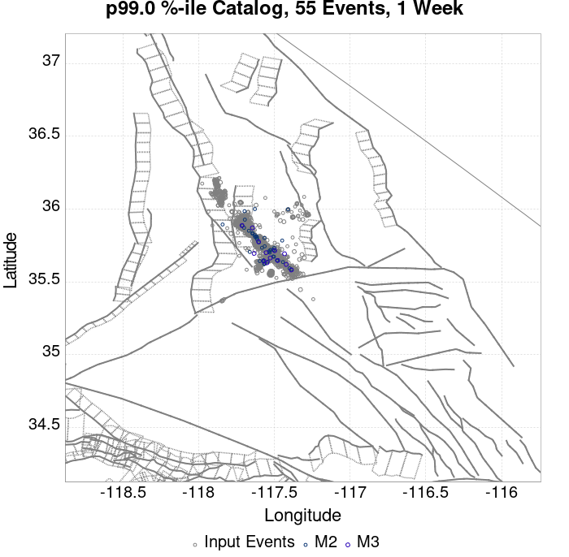 |  |  | |||||
| 1 Month | 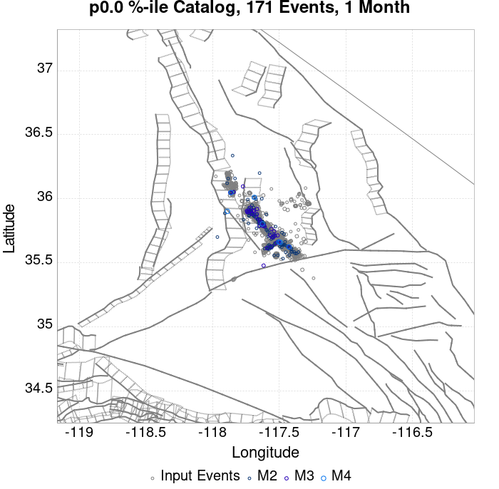 |  | 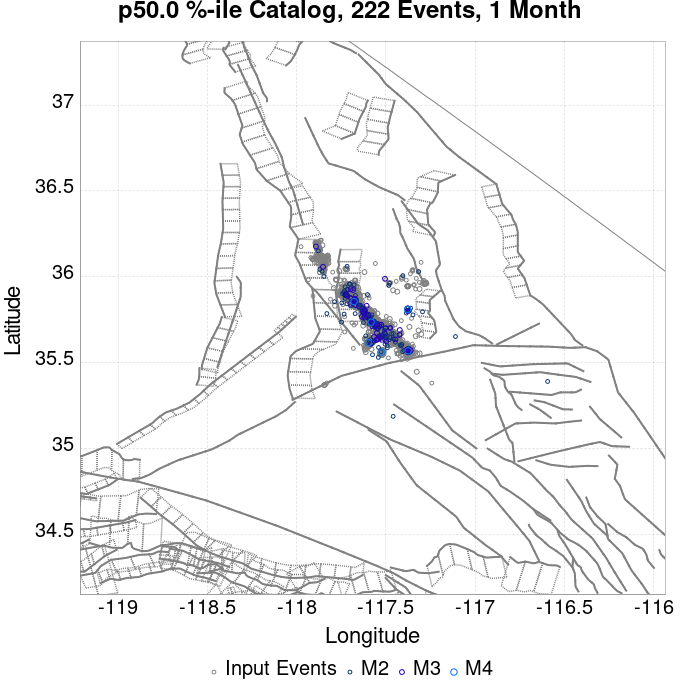 |  |  |  |  |  | 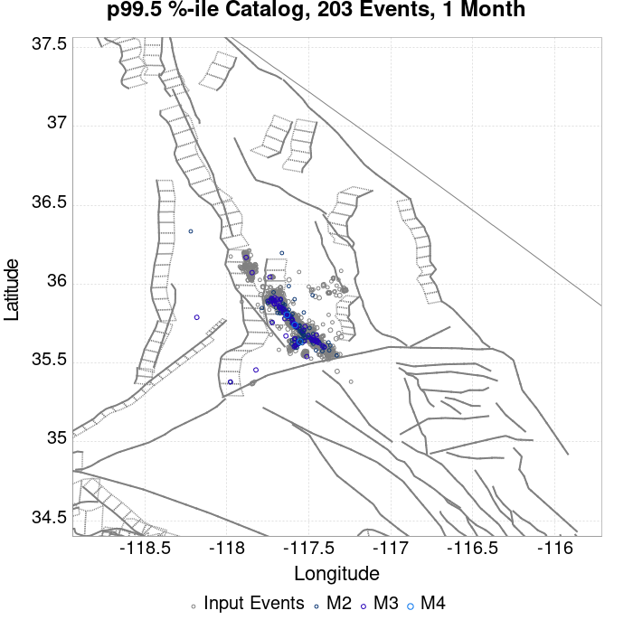 | 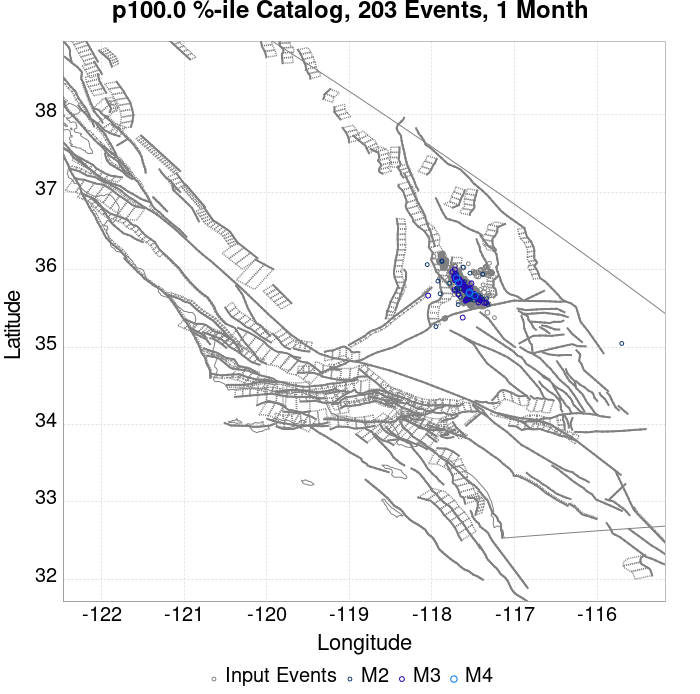 | ||
| 1 Year |  | 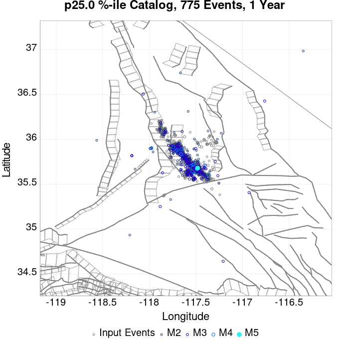 |  |  |  |  |  |  |  |  |  |  |
| 10 Year |  |  | 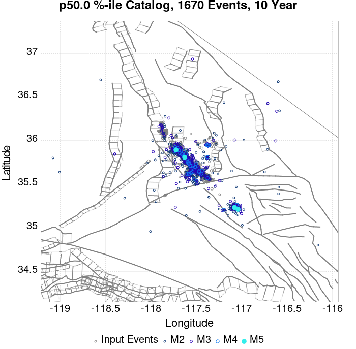 |  |  |  | 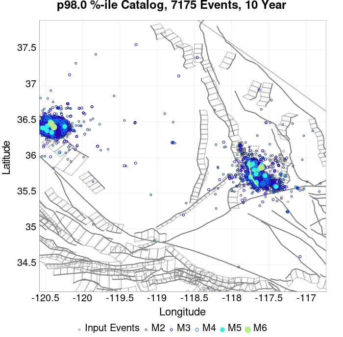 |  |  | 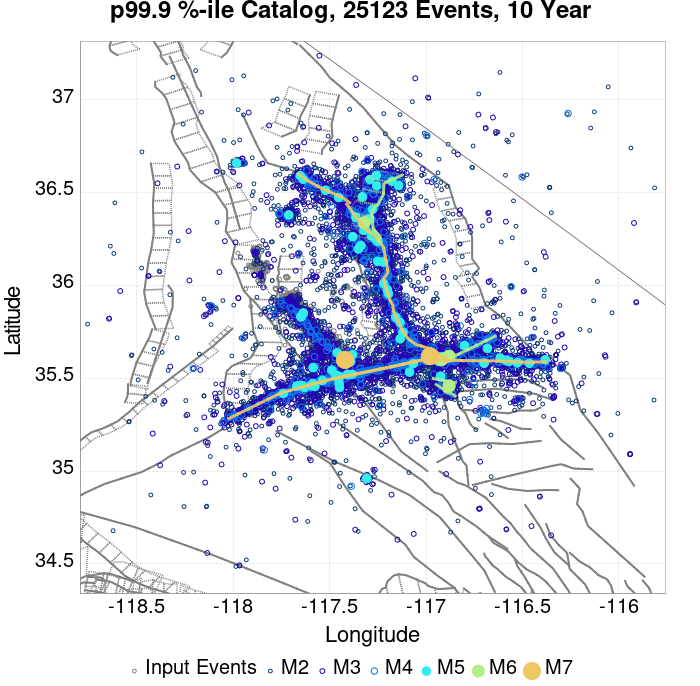 |  |
These plots compare simulated sequences with data from ComCat. All plots only consider events with hypocenters inside the ComCat region defined in the JSON input file.
Last updated at 2020/05/10 19:05:26 UTC, 281.7 days after the simulation start time and 309.7 days after the mainshock.
Total matching ComCat events found: 374
| Incremental MND | Cumulative MND |
|---|---|
 | 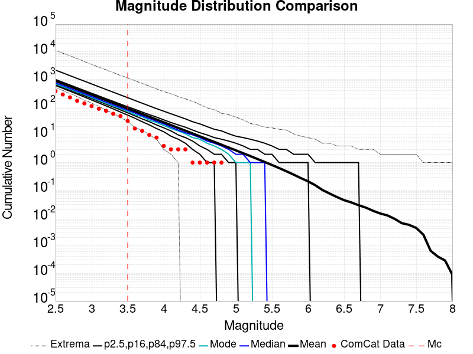 |
These plots show the show the magnitude versus time probability function since simulation start. Observed event data lie on top, with those input to the simulation plotted as magenta circles and those that occurred after the simulation start time as cyan circles. Time is relative to the mainshock (M7.1, ci38457511, plotted as a brown circle). Probabilities are only shown above the minimum simulated magnitude, M=2.5.
The following plots compare simulation results with ComCat data above a magnitude threshold. Plots labeled as M≥Mc(t) use the time-dependent magnitude of completeness (Mc) defined in Helmstetter et al. (2006), which is plotted below. In the case of multiple M≥5 ruptures, either as input to the simulation or in the comparison data, the maximum calculated time-dependent Mc is used. This time-dependent Mc function is plotted below.

Note: maps labeled 'Forecast' are for a duration that extends into the future, only forecasted values are plotted (ComCat data omitted)
| 1 Day | 1 Week | 1 Month | Current (281.7 Day) | Forecast: 1 Year | |
|---|---|---|---|---|---|
| M≥Mc(t) |  |  |  |  | |
| Prob: 99.97%, Actual: 3 | Prob: 100.00%, Actual: 32 | Prob: 100.00%, Actual: 136 | Prob: 100.00%, Actual: 374 | Prob: 100.00% | |
| M≥3.5 |  |  |  | ||
| Prob: 57.67%, Actual: 0 | Prob: 99.54%, Actual: 0 | Prob: 100.00%, Actual: 8 | Prob: 100.00%, Actual: 32 | Prob: 100.00% | |
| M≥4 |  | 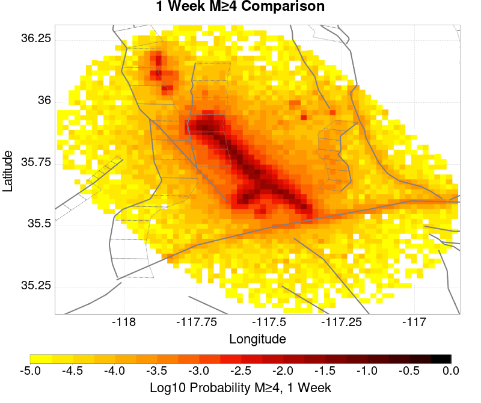 |  |  | |
| Prob: 24.21%, Actual: 0 | Prob: 82.91%, Actual: 0 | Prob: 99.66%, Actual: 2 | Prob: 100.00%, Actual: 4 | Prob: 100.00% | |
| M≥5 | 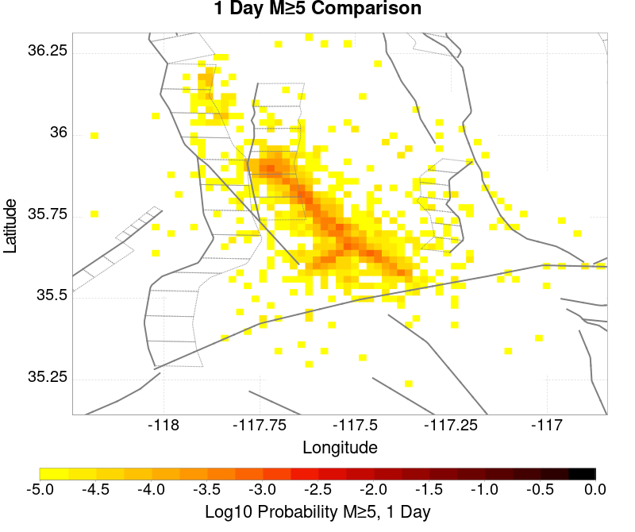 |  |  |  |  |
| Prob: 2.77%, Actual: 0 | Prob: 16.99%, Actual: 0 | Prob: 45.89%, Actual: 0 | Prob: 86.61%, Actual: 0 | Prob: 88.98% | |
| M≥6 |  |  |  | ||
| Prob: 0.22%, Actual: 0 | Prob: 1.60%, Actual: 0 | Prob: 5.27%, Actual: 0 | Prob: 16.46%, Actual: 0 | Prob: 17.99% | |
| M≥7 |  | 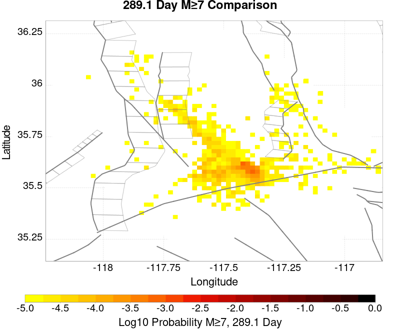 |  | ||
| Prob: 0.02%, Actual: 0 | Prob: 0.10%, Actual: 0 | Prob: 0.37%, Actual: 0 | Prob: 1.41%, Actual: 0 | Prob: 1.54% | |
| M≥8 |  |  |  |  | |
| Prob: 0.00%, Actual: 0 | Prob: 0.00%, Actual: 0 | Prob: 0.00%, Actual: 0 | Prob: 0.01%, Actual: 0 | Prob: 0.01% |
Note: maps labeled 'Forecast' are for a duration that extends into the future, only forecasted values are plotted (ComCat data omitted)
| 1 Day | 1 Week | 1 Month | Current (281.7 Day) | Forecast: 1 Year | |
|---|---|---|---|---|---|
| M≥Mc(t) |  |  | |||
| Mean: 10.432, Actual: 3 | Mean: 72.305, Actual: 32 | Mean: 250.837, Actual: 136 | Mean: 891.615, Actual: 374 | Mean: 987.402 | |
| M≥3.5 |  | 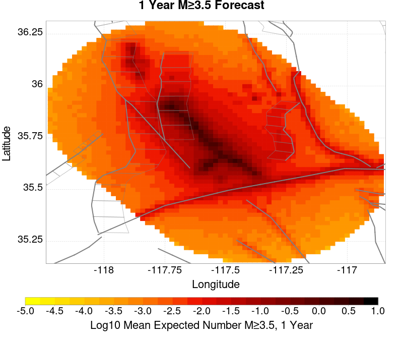 | |||
| Mean: 1.045, Actual: 0 | Mean: 7.224, Actual: 0 | Mean: 25.069, Actual: 8 | Mean: 89.102, Actual: 32 | Mean: 98.654 | |
| M≥4 | 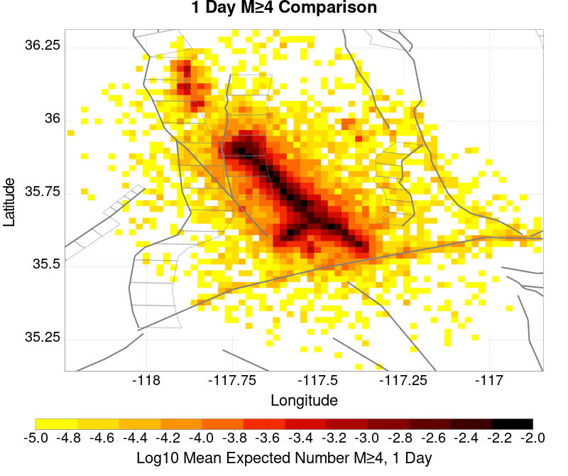 |  |  | ||
| Mean: 0.330, Actual: 0 | Mean: 2.282, Actual: 0 | Mean: 7.908, Actual: 2 | Mean: 28.124, Actual: 4 | Mean: 31.132 | |
| M≥5 |  | 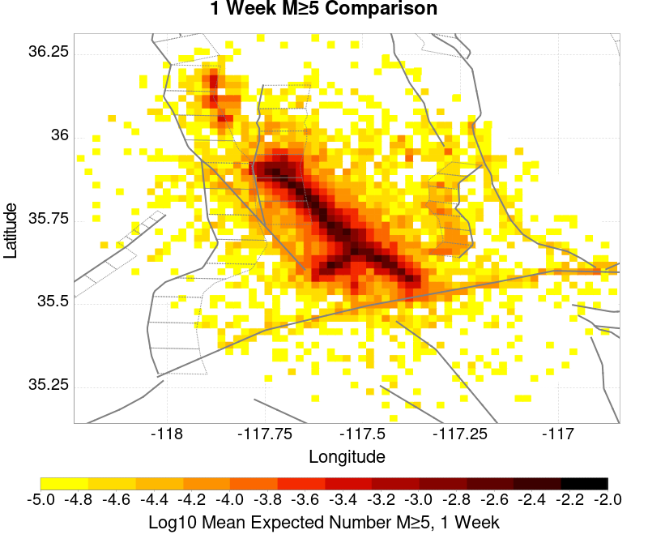 |  | 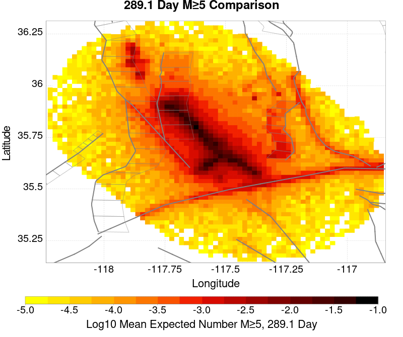 |  |
| Mean: 0.031, Actual: 0 | Mean: 0.223, Actual: 0 | Mean: 0.772, Actual: 0 | Mean: 2.736, Actual: 0 | Mean: 3.028 | |
| M≥6 | 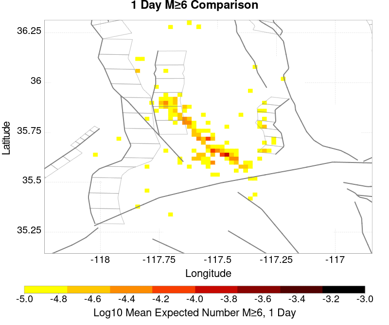 | 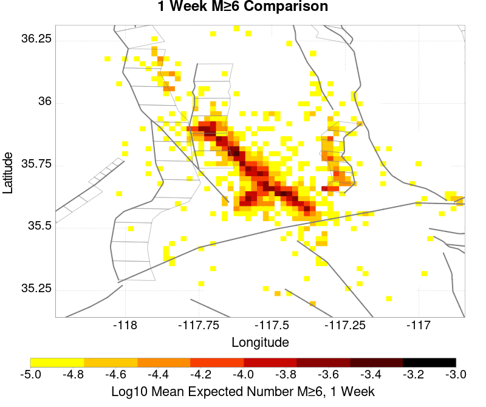 |  |  | |
| Mean: 2.32E-3, Actual: 0 | Mean: 0.018, Actual: 0 | Mean: 0.060, Actual: 0 | Mean: 0.208, Actual: 0 | Mean: 0.230 | |
| M≥7 | 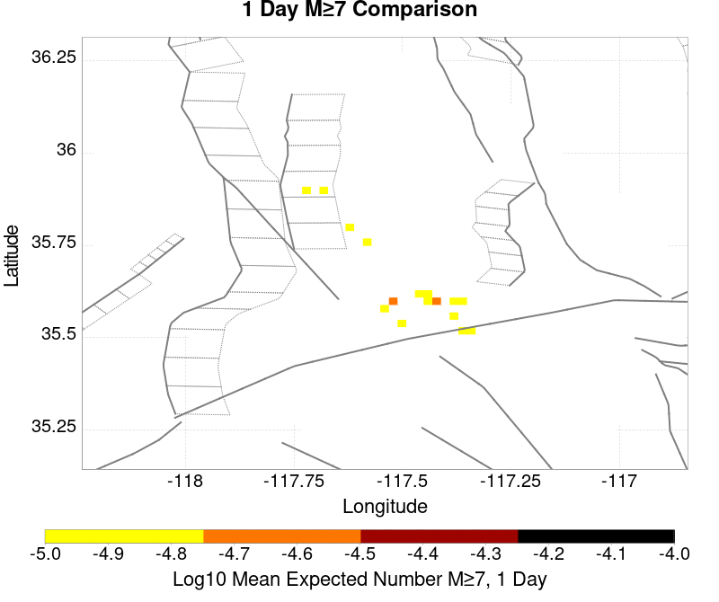 | 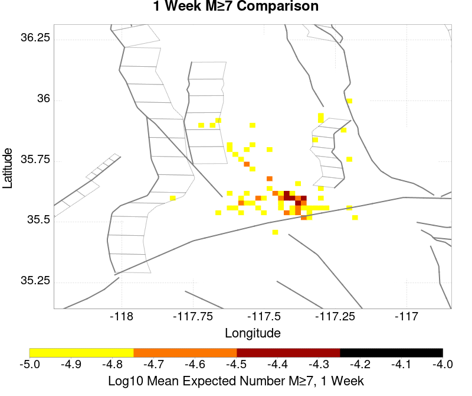 |  |  |  |
| Mean: 1.80E-4, Actual: 0 | Mean: 9.90E-4, Actual: 0 | Mean: 3.73E-3, Actual: 0 | Mean: 0.014, Actual: 0 | Mean: 0.016 | |
| M≥8 |  |  |  | ||
| Mean: 0.000, Actual: 0 | Mean: 0.000, Actual: 0 | Mean: 1.00E-5, Actual: 0 | Mean: 8.00E-5, Actual: 0 | Mean: 9.00E-5 |
| M≥Mc(t) | M≥3.5 | M≥4 | M≥5 | M≥6 | M≥7 | M≥8 |
|---|---|---|---|---|---|---|
 | 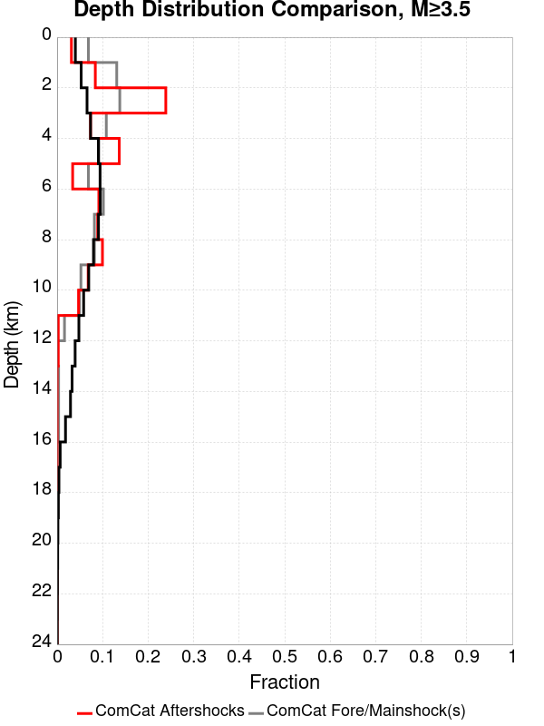 |  |  | 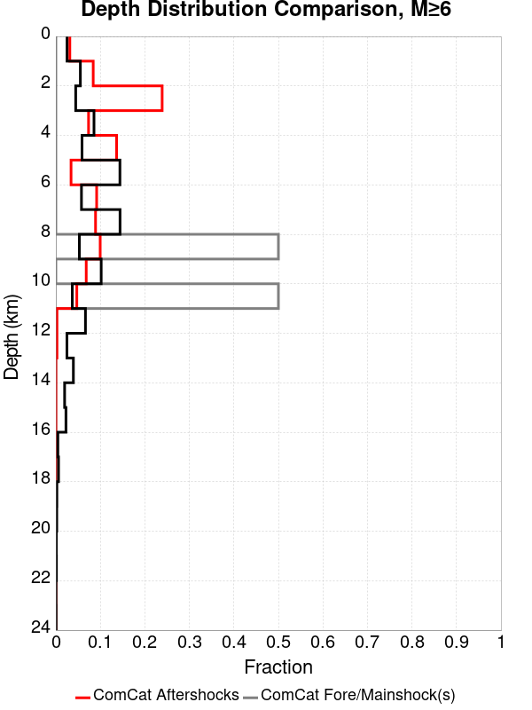 | 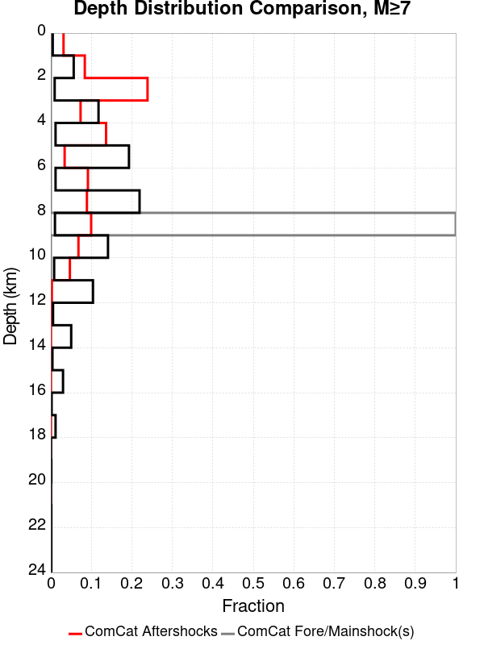 | 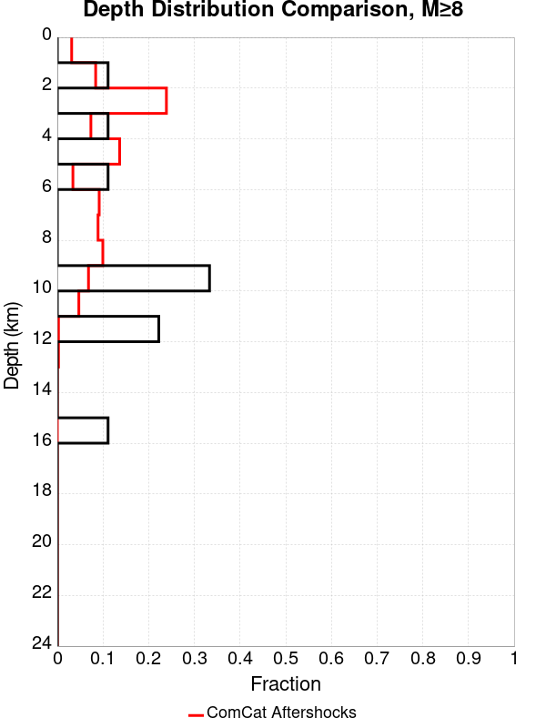 |
| Min Mag | 1 yr Triggered Ruptures (no spontaneous) | 10 yr Triggered Ruptures (no spontaneous) | 10 yr Triggered Ruptures (primary aftershocks only) |
|---|---|---|---|
| All Supra. Seis. |  | 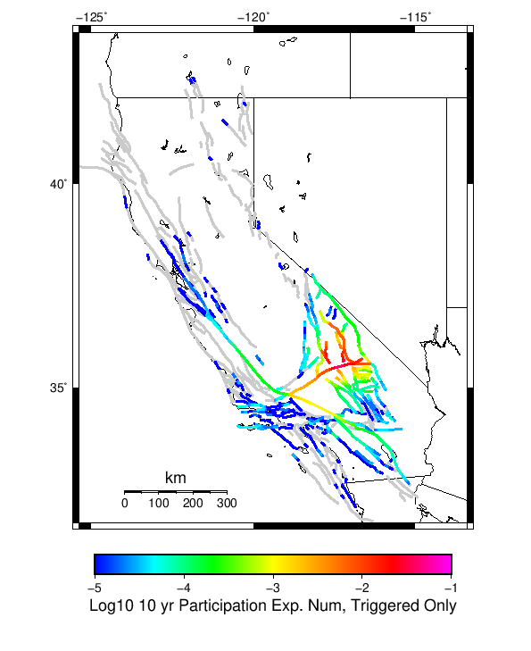 | |
| M≥6.5 |  |  | 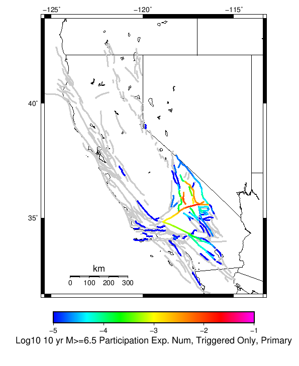 |
| M≥7 |  | 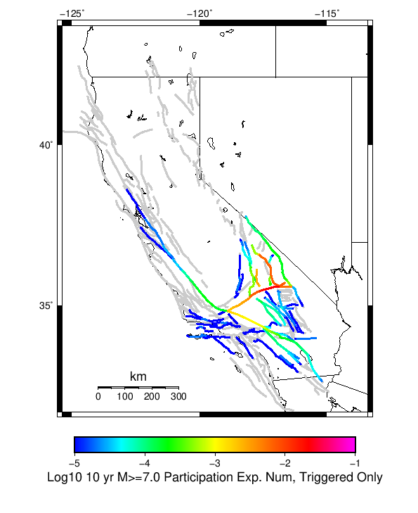 |  |
| M≥7.5 |  | 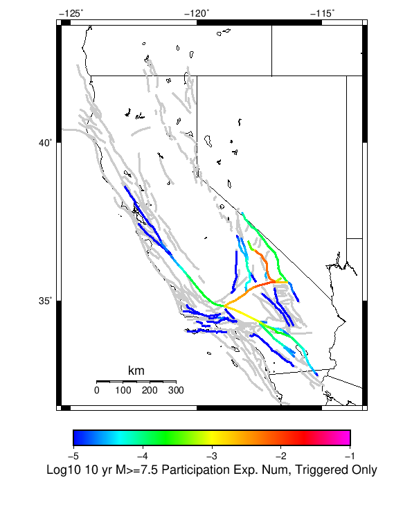 |  |
| M≥8 | 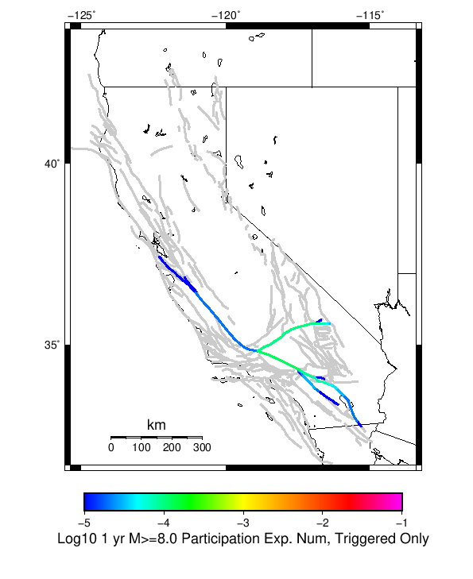 | 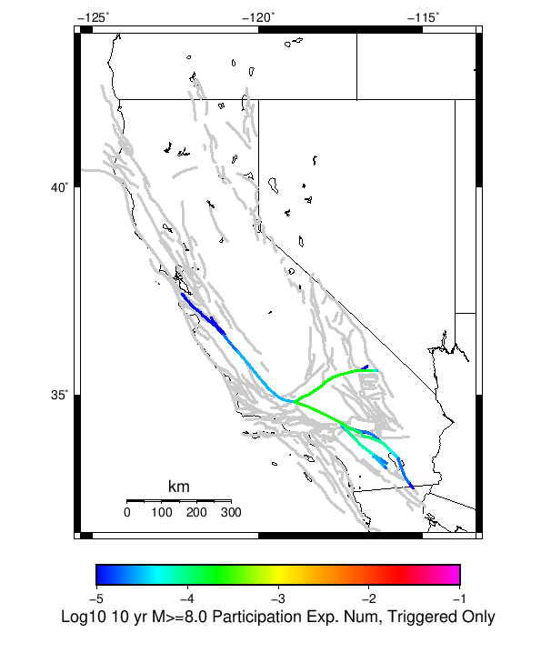 |  |
First 10 of 180 with matching ruptures shown
| Parent Name | Triggered 10 Year Mean Count | Triggered 1 Day Prob | Triggered 1 Day 95% Conf | Triggered 1 Week Prob | Triggered 1 Week 95% Conf | Triggered 1 Month Prob | Triggered 1 Month 95% Conf | Triggered 1 Year Prob | Triggered 1 Year 95% Conf | Triggered 10 Year Prob | Triggered 10 Year 95% Conf | Triggered 10 Year Primary Mean Count |
|---|---|---|---|---|---|---|---|---|---|---|---|---|
| Garlock (Central) | 0.05775 | 2.80E-4 (0.03%) | [0.02% 0.04%] | 1.95E-3 (0.19%) | [0.17% 0.22%] | 7.37E-3 (0.74%) | [0.69% 0.79%] | 0.029 (2.94%) | [2.84% 3.05%] | 0.056 (5.57%) | [5.43% 5.72%] | 0.03133 |
| Tank Canyon | 0.04556 | 1.40E-4 (0.01%) | [0.01% 0.02%] | 1.29E-3 (0.13%) | [0.11% 0.15%] | 4.56E-3 (0.46%) | [0.42% 0.50%] | 0.019 (1.86%) | [1.78% 1.95%] | 0.039 (3.92%) | [3.80% 4.04%] | 0.0117 |
| Little Lake | 0.02515 | 1.70E-4 (0.02%) | [0.01% 0.03%] | 1.05E-3 (0.10%) | [0.09% 0.13%] | 3.66E-3 (0.37%) | [0.33% 0.41%] | 0.013 (1.32%) | [1.26% 1.40%] | 0.025 (2.47%) | [2.37% 2.57%] | 0.01408 |
| Airport Lake | 0.01968 | 1.30E-4 (0.01%) | [0.01% 0.02%] | 9.20E-4 (0.09%) | [0.07% 0.11%] | 3.30E-3 (0.33%) | [0.30% 0.37%] | 0.011 (1.12%) | [1.06% 1.19%] | 0.020 (1.96%) | [1.88% 2.05%] | 0.01294 |
| Owl Lake | 0.01892 | 5.00E-5 (0.01%) | [0.00% 0.01%] | 4.00E-4 (0.04%) | [0.03% 0.06%] | 1.71E-3 (0.17%) | [0.15% 0.20%] | 7.99E-3 (0.80%) | [0.75% 0.86%] | 0.017 (1.67%) | [1.59% 1.75%] | 0.00488 |
| Panamint Valley | 0.01366 | 5.00E-5 (0.01%) | [0.00% 0.01%] | 4.40E-4 (0.04%) | [0.03% 0.06%] | 1.62E-3 (0.16%) | [0.14% 0.19%] | 6.75E-3 (0.68%) | [0.63% 0.73%] | 0.013 (1.34%) | [1.27% 1.41%] | 0.00489 |
| Garlock (East) | 0.01284 | 5.00E-5 (0.01%) | [0.00% 0.01%] | 2.30E-4 (0.02%) | [0.01% 0.04%] | 9.60E-4 (0.10%) | [0.08% 0.12%] | 5.40E-3 (0.54%) | [0.50% 0.59%] | 0.012 (1.16%) | [1.09% 1.22%] | 0.00345 |
| Ash Hill | 0.00684 | 4.00E-5 (0.00%) | [0.00% 0.01%] | 2.20E-4 (0.02%) | [0.01% 0.03%] | 7.70E-4 (0.08%) | [0.06% 0.10%] | 2.84E-3 (0.28%) | [0.25% 0.32%] | 6.34E-3 (0.63%) | [0.59% 0.69%] | 0.00188 |
| Hunter Mountain-Saline Valley | 0.00653 | 4.00E-5 (0.00%) | [0.00% 0.01%] | 2.20E-4 (0.02%) | [0.01% 0.03%] | 7.70E-4 (0.08%) | [0.06% 0.10%] | 3.13E-3 (0.31%) | [0.28% 0.35%] | 6.41E-3 (0.64%) | [0.59% 0.69%] | 0.00294 |
| Blackwater | 0.00531 | 3.00E-5 (0.00%) | [0.00% 0.01%] | 1.90E-4 (0.02%) | [0.01% 0.03%] | 4.50E-4 (0.04%) | [0.03% 0.06%] | 2.07E-3 (0.21%) | [0.18% 0.24%] | 5.10E-3 (0.51%) | [0.47% 0.56%] | 0.00135 |
First 10 of 151 with matching ruptures shown
| Parent Name | Triggered 10 Year Mean Count | Triggered 1 Day Prob | Triggered 1 Day 95% Conf | Triggered 1 Week Prob | Triggered 1 Week 95% Conf | Triggered 1 Month Prob | Triggered 1 Month 95% Conf | Triggered 1 Year Prob | Triggered 1 Year 95% Conf | Triggered 10 Year Prob | Triggered 10 Year 95% Conf | Triggered 10 Year Primary Mean Count |
|---|---|---|---|---|---|---|---|---|---|---|---|---|
| Garlock (Central) | 0.02512 | 1.30E-4 (0.01%) | [0.01% 0.02%] | 7.70E-4 (0.08%) | [0.06% 0.10%] | 2.93E-3 (0.29%) | [0.26% 0.33%] | 0.013 (1.26%) | [1.19% 1.33%] | 0.025 (2.46%) | [2.37% 2.56%] | 0.01311 |
| Airport Lake | 0.01468 | 9.00E-5 (0.01%) | [0.00% 0.02%] | 7.00E-4 (0.07%) | [0.05% 0.09%] | 2.37E-3 (0.24%) | [0.21% 0.27%] | 8.33E-3 (0.83%) | [0.78% 0.89%] | 0.015 (1.47%) | [1.39% 1.54%] | 0.00966 |
| Little Lake | 0.01418 | 1.00E-4 (0.01%) | [0.01% 0.02%] | 6.10E-4 (0.06%) | [0.05% 0.08%] | 2.18E-3 (0.22%) | [0.19% 0.25%] | 7.67E-3 (0.77%) | [0.71% 0.82%] | 0.014 (1.41%) | [1.33% 1.48%] | 0.00839 |
| Panamint Valley | 0.01264 | 5.00E-5 (0.01%) | [0.00% 0.01%] | 4.20E-4 (0.04%) | [0.03% 0.06%] | 1.50E-3 (0.15%) | [0.13% 0.18%] | 6.33E-3 (0.63%) | [0.59% 0.68%] | 0.012 (1.24%) | [1.17% 1.31%] | 0.00478 |
| Owl Lake | 0.01075 | 4.00E-5 (0.00%) | [0.00% 0.01%] | 3.40E-4 (0.03%) | [0.02% 0.05%] | 1.26E-3 (0.13%) | [0.11% 0.15%] | 5.31E-3 (0.53%) | [0.49% 0.58%] | 0.011 (1.07%) | [1.00% 1.13%] | 0.00444 |
| Garlock (East) | 0.00873 | 5.00E-5 (0.01%) | [0.00% 0.01%] | 1.90E-4 (0.02%) | [0.01% 0.03%] | 7.70E-4 (0.08%) | [0.06% 0.10%] | 4.00E-3 (0.40%) | [0.36% 0.44%] | 8.20E-3 (0.82%) | [0.77% 0.88%] | 0.00334 |
| Hunter Mountain-Saline Valley | 0.00636 | 3.00E-5 (0.00%) | [0.00% 0.01%] | 2.00E-4 (0.02%) | [0.01% 0.03%] | 7.30E-4 (0.07%) | [0.06% 0.09%] | 3.09E-3 (0.31%) | [0.28% 0.35%] | 6.30E-3 (0.63%) | [0.58% 0.68%] | 0.00291 |
| Tank Canyon | 0.00548 | 3.00E-5 (0.00%) | [0.00% 0.01%] | 2.40E-4 (0.02%) | [0.02% 0.04%] | 7.40E-4 (0.07%) | [0.06% 0.09%] | 2.80E-3 (0.28%) | [0.25% 0.32%] | 5.45E-3 (0.55%) | [0.50% 0.59%] | 0.00132 |
| Garlock (West) | 0.00416 | 3.00E-5 (0.00%) | [0.00% 0.01%] | 8.00E-5 (0.01%) | [0.00% 0.02%] | 4.00E-4 (0.04%) | [0.03% 0.06%] | 2.07E-3 (0.21%) | [0.18% 0.24%] | 4.16E-3 (0.42%) | [0.38% 0.46%] | 0.00218 |
| So Sierra Nevada | 0.00251 | 0.000 (0.00%) | [0.00% 0.00%] | 1.00E-5 (0.00%) | [0.00% 0.01%] | 1.20E-4 (0.01%) | [0.01% 0.02%] | 9.40E-4 (0.09%) | [0.08% 0.12%] | 2.48E-3 (0.25%) | [0.22% 0.28%] | 4.0E-4 |
First 10 of 112 with matching ruptures shown
| Parent Name | Triggered 10 Year Mean Count | Triggered 1 Day Prob | Triggered 1 Day 95% Conf | Triggered 1 Week Prob | Triggered 1 Week 95% Conf | Triggered 1 Month Prob | Triggered 1 Month 95% Conf | Triggered 1 Year Prob | Triggered 1 Year 95% Conf | Triggered 10 Year Prob | Triggered 10 Year 95% Conf | Triggered 10 Year Primary Mean Count |
|---|---|---|---|---|---|---|---|---|---|---|---|---|
| Garlock (Central) | 0.02232 | 1.20E-4 (0.01%) | [0.01% 0.02%] | 6.90E-4 (0.07%) | [0.05% 0.09%] | 2.61E-3 (0.26%) | [0.23% 0.30%] | 0.011 (1.12%) | [1.06% 1.19%] | 0.022 (2.20%) | [2.11% 2.29%] | 0.01185 |
| Panamint Valley | 0.00857 | 4.00E-5 (0.00%) | [0.00% 0.01%] | 2.90E-4 (0.03%) | [0.02% 0.04%] | 1.04E-3 (0.10%) | [0.09% 0.13%] | 4.35E-3 (0.43%) | [0.40% 0.48%] | 8.53E-3 (0.85%) | [0.80% 0.91%] | 0.0039 |
| Owl Lake | 0.00784 | 3.00E-5 (0.00%) | [0.00% 0.01%] | 2.90E-4 (0.03%) | [0.02% 0.04%] | 1.08E-3 (0.11%) | [0.09% 0.13%] | 4.13E-3 (0.41%) | [0.37% 0.46%] | 7.84E-3 (0.78%) | [0.73% 0.84%] | 0.00433 |
| Garlock (East) | 0.00622 | 5.00E-5 (0.01%) | [0.00% 0.01%] | 1.20E-4 (0.01%) | [0.01% 0.02%] | 5.50E-4 (0.06%) | [0.04% 0.07%] | 3.06E-3 (0.31%) | [0.27% 0.34%] | 6.15E-3 (0.61%) | [0.57% 0.67%] | 0.00328 |
| Hunter Mountain-Saline Valley | 0.00617 | 3.00E-5 (0.00%) | [0.00% 0.01%] | 2.00E-4 (0.02%) | [0.01% 0.03%] | 7.30E-4 (0.07%) | [0.06% 0.09%] | 3.03E-3 (0.30%) | [0.27% 0.34%] | 6.16E-3 (0.62%) | [0.57% 0.67%] | 0.00289 |
| Garlock (West) | 0.00409 | 3.00E-5 (0.00%) | [0.00% 0.01%] | 8.00E-5 (0.01%) | [0.00% 0.02%] | 4.00E-4 (0.04%) | [0.03% 0.06%] | 2.02E-3 (0.20%) | [0.18% 0.23%] | 4.09E-3 (0.41%) | [0.37% 0.45%] | 0.00216 |
| Little Lake | 0.00295 | 4.00E-5 (0.00%) | [0.00% 0.01%] | 1.20E-4 (0.01%) | [0.01% 0.02%] | 4.30E-4 (0.04%) | [0.03% 0.06%] | 1.61E-3 (0.16%) | [0.14% 0.19%] | 2.95E-3 (0.29%) | [0.26% 0.33%] | 0.00195 |
| Airport Lake | 0.00276 | 4.00E-5 (0.00%) | [0.00% 0.01%] | 1.20E-4 (0.01%) | [0.01% 0.02%] | 4.30E-4 (0.04%) | [0.03% 0.06%] | 1.55E-3 (0.15%) | [0.13% 0.18%] | 2.76E-3 (0.28%) | [0.24% 0.31%] | 0.00187 |
| San Andreas (Mojave N) | 0.00171 | 0.000 (0.00%) | [0.00% 0.00%] | 3.00E-5 (0.00%) | [0.00% 0.01%] | 1.60E-4 (0.02%) | [0.01% 0.03%] | 8.30E-4 (0.08%) | [0.07% 0.10%] | 1.67E-3 (0.17%) | [0.14% 0.19%] | 7.9E-4 |
| San Andreas (Mojave S) | 0.00132 | 0.000 (0.00%) | [0.00% 0.00%] | 2.00E-5 (0.00%) | [0.00% 0.01%] | 1.40E-4 (0.01%) | [0.01% 0.02%] | 6.80E-4 (0.07%) | [0.05% 0.09%] | 1.29E-3 (0.13%) | [0.11% 0.15%] | 6.0E-4 |
First 10 of 85 with matching ruptures shown
| Parent Name | Triggered 10 Year Mean Count | Triggered 1 Day Prob | Triggered 1 Day 95% Conf | Triggered 1 Week Prob | Triggered 1 Week 95% Conf | Triggered 1 Month Prob | Triggered 1 Month 95% Conf | Triggered 1 Year Prob | Triggered 1 Year 95% Conf | Triggered 10 Year Prob | Triggered 10 Year 95% Conf | Triggered 10 Year Primary Mean Count |
|---|---|---|---|---|---|---|---|---|---|---|---|---|
| Garlock (Central) | 0.00926 | 6.00E-5 (0.01%) | [0.00% 0.01%] | 2.70E-4 (0.03%) | [0.02% 0.04%] | 1.06E-3 (0.11%) | [0.09% 0.13%] | 4.66E-3 (0.47%) | [0.43% 0.51%] | 9.21E-3 (0.92%) | [0.86% 0.98%] | 0.00475 |
| Panamint Valley | 0.00598 | 3.00E-5 (0.00%) | [0.00% 0.01%] | 2.00E-4 (0.02%) | [0.01% 0.03%] | 7.40E-4 (0.07%) | [0.06% 0.09%] | 2.99E-3 (0.30%) | [0.27% 0.34%] | 5.98E-3 (0.60%) | [0.55% 0.65%] | 0.00287 |
| Hunter Mountain-Saline Valley | 0.00595 | 3.00E-5 (0.00%) | [0.00% 0.01%] | 2.00E-4 (0.02%) | [0.01% 0.03%] | 7.30E-4 (0.07%) | [0.06% 0.09%] | 2.98E-3 (0.30%) | [0.27% 0.33%] | 5.95E-3 (0.60%) | [0.55% 0.65%] | 0.00286 |
| Garlock (West) | 0.00367 | 3.00E-5 (0.00%) | [0.00% 0.01%] | 8.00E-5 (0.01%) | [0.00% 0.02%] | 3.80E-4 (0.04%) | [0.03% 0.05%] | 1.87E-3 (0.19%) | [0.16% 0.22%] | 3.67E-3 (0.37%) | [0.33% 0.41%] | 0.00196 |
| Garlock (East) | 0.00245 | 3.00E-5 (0.00%) | [0.00% 0.01%] | 6.00E-5 (0.01%) | [0.00% 0.01%] | 2.10E-4 (0.02%) | [0.01% 0.03%] | 1.26E-3 (0.13%) | [0.11% 0.15%] | 2.45E-3 (0.24%) | [0.22% 0.28%] | 0.00142 |
| San Andreas (Mojave N) | 0.00169 | 0.000 (0.00%) | [0.00% 0.00%] | 3.00E-5 (0.00%) | [0.00% 0.01%] | 1.60E-4 (0.02%) | [0.01% 0.03%] | 8.20E-4 (0.08%) | [0.07% 0.10%] | 1.65E-3 (0.17%) | [0.14% 0.19%] | 7.9E-4 |
| San Andreas (Mojave S) | 0.00126 | 0.000 (0.00%) | [0.00% 0.00%] | 2.00E-5 (0.00%) | [0.00% 0.01%] | 1.20E-4 (0.01%) | [0.01% 0.02%] | 6.30E-4 (0.06%) | [0.05% 0.08%] | 1.24E-3 (0.12%) | [0.10% 0.15%] | 5.8E-4 |
| San Andreas (San Bernardino N) | 7.8E-4 | 0.000 (0.00%) | [0.00% 0.00%] | 1.00E-5 (0.00%) | [0.00% 0.01%] | 7.00E-5 (0.01%) | [0.00% 0.02%] | 4.00E-4 (0.04%) | [0.03% 0.06%] | 7.80E-4 (0.08%) | [0.06% 0.10%] | 3.4E-4 |
| Owl Lake | 7.2E-4 | 0.000 (0.00%) | [0.00% 0.00%] | 0.000 (0.00%) | [0.00% 0.00%] | 1.30E-4 (0.01%) | [0.01% 0.02%] | 4.00E-4 (0.04%) | [0.03% 0.06%] | 7.20E-4 (0.07%) | [0.06% 0.09%] | 3.6E-4 |
| San Andreas (San Bernardino S) | 3.9E-4 | 0.000 (0.00%) | [0.00% 0.00%] | 0.000 (0.00%) | [0.00% 0.00%] | 2.00E-5 (0.00%) | [0.00% 0.01%] | 2.20E-4 (0.02%) | [0.01% 0.03%] | 3.90E-4 (0.04%) | [0.03% 0.05%] | 1.4E-4 |
First 10 of 31 with matching ruptures shown
| Parent Name | Triggered 10 Year Mean Count | Triggered 1 Day Prob | Triggered 1 Day 95% Conf | Triggered 1 Week Prob | Triggered 1 Week 95% Conf | Triggered 1 Month Prob | Triggered 1 Month 95% Conf | Triggered 1 Year Prob | Triggered 1 Year 95% Conf | Triggered 10 Year Prob | Triggered 10 Year 95% Conf | Triggered 10 Year Primary Mean Count |
|---|---|---|---|---|---|---|---|---|---|---|---|---|
| San Andreas (Mojave N) | 2.4E-4 | 0.000 (0.00%) | [0.00% 0.00%] | 0.000 (0.00%) | [0.00% 0.00%] | 2.00E-5 (0.00%) | [0.00% 0.01%] | 1.20E-4 (0.01%) | [0.01% 0.02%] | 2.40E-4 (0.02%) | [0.02% 0.04%] | 1.2E-4 |
| San Andreas (Mojave S) | 2.4E-4 | 0.000 (0.00%) | [0.00% 0.00%] | 0.000 (0.00%) | [0.00% 0.00%] | 2.00E-5 (0.00%) | [0.00% 0.01%] | 1.20E-4 (0.01%) | [0.01% 0.02%] | 2.40E-4 (0.02%) | [0.02% 0.04%] | 1.2E-4 |
| San Andreas (San Bernardino N) | 2.4E-4 | 0.000 (0.00%) | [0.00% 0.00%] | 0.000 (0.00%) | [0.00% 0.00%] | 2.00E-5 (0.00%) | [0.00% 0.01%] | 1.20E-4 (0.01%) | [0.01% 0.02%] | 2.40E-4 (0.02%) | [0.02% 0.04%] | 1.2E-4 |
| Garlock (Central) | 2.1E-4 | 0.000 (0.00%) | [0.00% 0.00%] | 0.000 (0.00%) | [0.00% 0.00%] | 2.00E-5 (0.00%) | [0.00% 0.01%] | 1.00E-4 (0.01%) | [0.01% 0.02%] | 2.10E-4 (0.02%) | [0.01% 0.03%] | 1.2E-4 |
| Garlock (West) | 2.1E-4 | 0.000 (0.00%) | [0.00% 0.00%] | 0.000 (0.00%) | [0.00% 0.00%] | 2.00E-5 (0.00%) | [0.00% 0.01%] | 1.00E-4 (0.01%) | [0.01% 0.02%] | 2.10E-4 (0.02%) | [0.01% 0.03%] | 1.2E-4 |
| Garlock (East) | 1.9E-4 | 0.000 (0.00%) | [0.00% 0.00%] | 0.000 (0.00%) | [0.00% 0.00%] | 2.00E-5 (0.00%) | [0.00% 0.01%] | 9.00E-5 (0.01%) | [0.00% 0.02%] | 1.90E-4 (0.02%) | [0.01% 0.03%] | 1.2E-4 |
| San Andreas (San Bernardino S) | 1.3E-4 | 0.000 (0.00%) | [0.00% 0.00%] | 0.000 (0.00%) | [0.00% 0.00%] | 1.00E-5 (0.00%) | [0.00% 0.01%] | 9.00E-5 (0.01%) | [0.00% 0.02%] | 1.30E-4 (0.01%) | [0.01% 0.02%] | 5.0E-5 |
| San Andreas (San Gorgonio Pass-Garnet HIll) | 1.2E-4 | 0.000 (0.00%) | [0.00% 0.00%] | 0.000 (0.00%) | [0.00% 0.00%] | 1.00E-5 (0.00%) | [0.00% 0.01%] | 8.00E-5 (0.01%) | [0.00% 0.02%] | 1.20E-4 (0.01%) | [0.01% 0.02%] | 5.0E-5 |
| San Andreas (Coachella) rev | 9.0E-5 | 0.000 (0.00%) | [0.00% 0.00%] | 0.000 (0.00%) | [0.00% 0.00%] | 0.000 (0.00%) | [0.00% 0.00%] | 4.00E-5 (0.00%) | [0.00% 0.01%] | 9.00E-5 (0.01%) | [0.00% 0.02%] | 3.0E-5 |
| San Jacinto (San Bernardino) | 9.0E-5 | 0.000 (0.00%) | [0.00% 0.00%] | 0.000 (0.00%) | [0.00% 0.00%] | 1.00E-5 (0.00%) | [0.00% 0.01%] | 3.00E-5 (0.00%) | [0.00% 0.01%] | 9.00E-5 (0.01%) | [0.00% 0.02%] | 6.0E-5 |
The first 5 sections (sorted by trigger rate) are plotted below. All fault MPDs are available here
| 1 Week | 1 Month | 1 Year | 10 Year |
|---|---|---|---|
 |  |  |  |
 |  |  |  |
 | 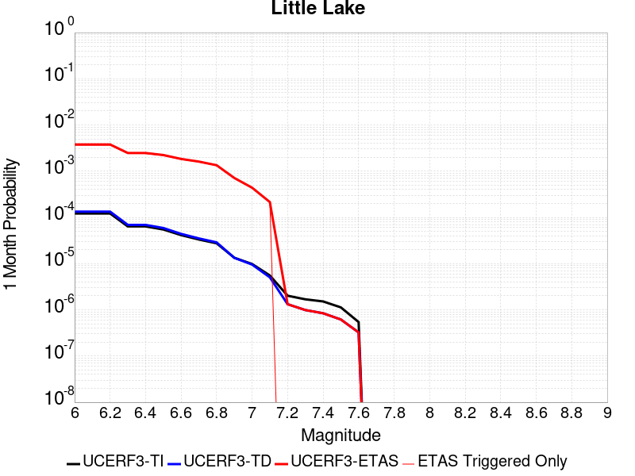 |  | 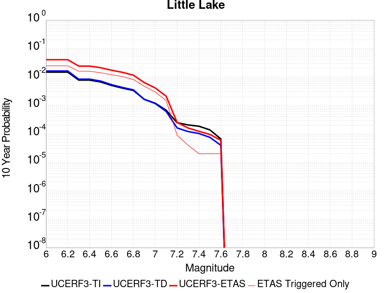 |
 |  |  |  |
 |  | 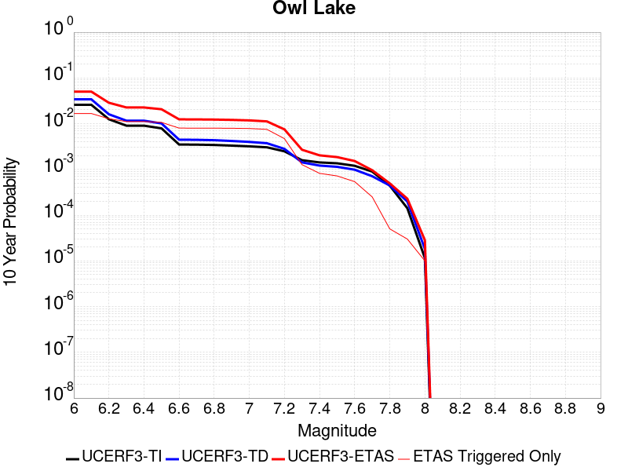 |
| Min Mag | Triggered Ruptures (no spontaneous) | Triggered Ruptures (primary aftershocks only) |
|---|---|---|
| M≥2.5 |  |  |
| M≥5 |  | |
| M≥6 |  | |
| M≥7 |  |
{
"numSimulations": 100000,
"duration": 10.0,
"startTimeMillis": 1564802394040,
"includeSpontaneous": false,
"randomSeed": 1564862184732,
"binaryOutput": true,
"binaryOutputFilters": [
{
"prefix": "results_complete",
"descendantsOnly": false
},
{
"prefix": "results_m5_preserve_chain",
"minMag": 5.0,
"preserveChainBelowMag": true,
"descendantsOnly": false
}
],
"forceRecalc": false,
"simulationName": "ComCat M7.1 (ci38457511), 28 Days After, ShakeMap Surfaces",
"numRetries": 3,
"outputDir": "/home/scec-02/kmilner/ucerf3/etas_sim/2019_08_03-ComCatM7p1_ci38457511_28DaysAfter_ShakeMapSurfaces-noSpont-full_td-scale1.14",
"triggerRuptures": [
"omitted due to length, see original input file"
],
"cacheDir": "/home/scec-02/kmilner/ucerf3/ucerf3-etas-launcher/inputs/cache_fm3p1_ba",
"fssFile": "/home/scec-02/kmilner/ucerf3/ucerf3-etas-launcher/inputs/2013_05_10-ucerf3p3-production-10runs_COMPOUND_SOL_FM3_1_SpatSeisU3_MEAN_BRANCH_AVG_SOL.zip",
"probModel": "FULL_TD",
"applySubSeisForSupraNucl": true,
"totRateScaleFactor": 1.14,
"gridSeisCorr": true,
"timeIndependentERF": false,
"griddedOnly": false,
"imposeGR": false,
"includeIndirectTriggering": true,
"gridSeisDiscr": 0.1,
"catalogCompletenessModel": "RELAXED",
"configCommand": "u3etas_comcat_event_config_builder.sh --event-id ci38457511 --num-simulations 100000 --days-before 7 --days-after 28 --finite-surf-shakemap --finite-surf-shakemap-min-mag 5 --hpc-site USC_HPC --nodes 36 --hours 24 --queue scec_hiprio",
"configTime": 1564862184732,
"comcatMetadata": {
"region": {
"border": [
{
"latitude": 35.15123745324938,
"longitude": -117.46198765392752
},
{
"latitude": 35.170513097218205,
"longitude": -117.55046477274733
},
{
"latitude": 35.201997575622634,
"longitude": -117.63356287896195
},
{
"latitude": 35.24474776584818,
"longitude": -117.70878534540662
},
{
"latitude": 35.29030244291857,
"longitude": -117.7650027179687
},
{
"latitude": 35.28979894832488,
"longitude": -117.7657059692625
},
{
"latitude": 35.599352334844,
"longitude": -118.10406638799292
},
{
"latitude": 35.59991798729306,
"longitude": -118.1032787187642
},
{
"latitude": 35.59991798729306,
"longitude": -118.10327871876426
},
{
"latitude": 35.6081394160588,
"longitude": -118.11346457171017
},
{
"latitude": 35.66926981044508,
"longitude": -118.1666275188854
},
{
"latitude": 35.73695892585081,
"longitude": -118.20599267135113
},
{
"latitude": 35.80916411728616,
"longitude": -118.23033589945786
},
{
"latitude": 35.8837008101987,
"longitude": -118.23887921717626
},
{
"latitude": 35.95830771861983,
"longitude": -118.2313189434723
},
{
"latitude": 36.030715089420035,
"longitude": -118.20784020820832
},
{
"latitude": 36.09871396695588,
"longitude": -118.16911673663371
},
{
"latitude": 36.16022434972565,
"longitude": -118.11629525880562
},
{
"latitude": 36.21336005220017,
"longitude": -118.05096440373305
},
{
"latitude": 36.25648810437343,
"longitude": -117.97510853634732
},
{
"latitude": 36.28828062939993,
"longitude": -117.8910476483114
},
{
"latitude": 36.307757341513756,
"longitude": -117.8013650783672
},
{
"latitude": 36.31431710102649,
"longitude": -117.70882546279998
},
{
"latitude": 36.307757341513756,
"longitude": -117.61628584723277
},
{
"latitude": 36.28828062939993,
"longitude": -117.52660327728856
},
{
"latitude": 36.25648810437343,
"longitude": -117.44254238925264
},
{
"latitude": 36.21336005220017,
"longitude": -117.36668652186691
},
{
"latitude": 36.16849978031224,
"longitude": -117.31153038795429
},
{
"latitude": 36.1690738860583,
"longitude": -117.3107309475365
},
{
"latitude": 35.857302712860964,
"longitude": -116.9730504737608
},
{
"latitude": 35.85679179423907,
"longitude": -116.9737640944955
},
{
"latitude": 35.849566414597014,
"longitude": -116.96491461360324
},
{
"latitude": 35.78805819220281,
"longitude": -116.9122967694479
},
{
"latitude": 35.72006106557635,
"longitude": -116.87372034968973
},
{
"latitude": 35.64765482528862,
"longitude": -116.85032807444419
},
{
"latitude": 35.57304829206068,
"longitude": -116.8427916482061
},
{
"latitude": 35.49851117585832,
"longitude": -116.8512961557198
},
{
"latitude": 35.42630481575459,
"longitude": -116.87553976530553
},
{
"latitude": 35.35861392859174,
"longitude": -116.91474809853695
},
{
"latitude": 35.29748137319737,
"longitude": -116.96770221389164
},
{
"latitude": 35.24474776584818,
"longitude": -117.03277884359336
},
{
"latitude": 35.201997575622634,
"longitude": -117.10800131003803
},
{
"latitude": 35.170513097218205,
"longitude": -117.19109941625265
},
{
"latitude": 35.15123745324938,
"longitude": -117.27957653507247
},
{
"latitude": 35.14474752487352,
"longitude": -117.3707820945
}
]
},
"eventID": "ci38457511",
"minDepth": -10.0,
"maxDepth": 24.0,
"minMag": 2.5,
"startTime": 1562259775360,
"endTime": 1564802393040,
"magComplete": 3.5
}
}